| 번호 | 교과서·단원 | 원 기출 / 핵심 이론 | 별점 | 문제 쪽 | 해설 쪽 |
|---|---|---|---|---|---|
| 1 | 비상교육 통합과학1 Ⅱ-2 | 2022 화학 A7 (동료 평가 준거) · 2018 화학 (Li·Na 실험 안전·평가표) · 2024 화학 B4 (변인) | ★★★★★ | 2 | 22 |
| 2 | 비상교육 통합과학1 Ⅱ-2 | 2018 화학 논술 (발생학습 모형 도전 단계) · 2022 화학 A5 (주기율표) · 2023 화학 A5 (귀추) 참고 | ★★★★☆ | 3 | 23 |
| 3 | 비상교육·미래엔 통합과학1 Ⅱ-2 | 2025 화학 A7 · 2019 화학 (드라이버 개념 변화 모형) · 2023 화학 B4 (화학 결합) 참고 | ★★★★★ | 4 | 24 |
| 4 | 비상교육 통합과학2 Ⅰ-2 | 2016 화학 (산화·환원 정의 변천·과학의 본성) · 2024 화학 A7 (통합과학2 산화·환원, 산화수 범위) · 2023 화학 B3 (오수벨 상관적 포섭) | ★★★★★ | 5 | 25 |
| 5 | 비상교육 통합과학2 Ⅰ-2 | 2022 화학 A6 (기초 탐구 과정·추리) · 2025 화학 A6 (귀납) · 2024 화학 A6 (과정·기능) 참고 | ★★★★☆ | 6 | 26 |
| 6 | 비상교육 통합과학2 Ⅰ-2 | 2025 물리 B3 · 2025 지구 B3 (5E 정교화) · 2024 화학 A6 (자료 수집·분석 및 해석) | ★★★★★ | 7 | 27 |
| 7 | 비상교육 통합과학2 Ⅰ-2 | 2022 화학 B5 (PBL) · 2023 화학 B5 (STS·신재생 에너지) · 2025 화학 B5 (측정·실험 타당도) 참고 | ★★★★☆ | 8 | 28 |
| 8 | 비상교육 화학 Ⅰ-2 | 2017 화학 (몰 — 피아제 비례 논리·비유) · 2021 화학 A5 (피아제 형식적 조작기) | ★★★★☆ | 9 | 29 |
| 9 | 비상교육 화학 Ⅰ-3 | 2020 화학 A6 (양적 관계·STAD·향상 점수) · 2025 화학 B5 (측정 신뢰도) | ★★★★★ | 10 | 30 |
| 10 | 비상교육 화학 Ⅱ-1 | 2025 화학 B4 (관찰의 이론 의존성) · 2021 화학 B4 (관찰의 이론 의존성) · 2025 화학 A7 참고 | ★★★★☆ | 11 | 31 |
| 11 | 비상교육 화학 Ⅱ-2 | 2024 화학 A5 (Jigsaw·향상 점수) · 2025 화학 A5 (디지털 소양·컴퓨팅 사고력) | ★★★★☆ | 12 | 32 |
| 12 | 비상교육 화학 Ⅱ-3 | 2025 화학 B3 · 2022 화학 B4 (로슨 순환학습) · 2026 생물 A7 참고 | ★★★★★ | 13 | 33 |
| 13 | 비상교육 화학 Ⅱ-4 | 2024 물리 A6 (포퍼 반증·임시방편 가설) · 2018 화학 논술 (포퍼의 한계) 참고 | ★★★★☆ | 14 | 34 |
| 14 | 비상교육 화학 Ⅲ-1 | 2023 화학 A6 (표상 양식) · 2019 화학 (모형 개발과 사용) · 2025 화학 A7 (평형 오개념) 참고 | ★★★★☆ | 15 | 35 |
| 15 | 비상교육 화학 Ⅲ-2 | 2025 화학 A6 (귀납) · 2021 화학 B4 (가설-연역) · 2022 화학 B3 (자료 변환) 참고 | ★★★★★ | 16 | 36 |
| 16 | 비상교육 화학 Ⅲ-3 | 2025 화학 A7 (인지 갈등) · 2017 화학 (POE 예측의 역할) · 2026 화학 B4 (선개념) 참고 | ★★★★★ | 17 | 37 |
| 17 | 비상교육 화학 Ⅳ-1 | 2017 화학 (체크리스트·조작적 정의) · 2018 화학 (실험 안전·평가표) · 2025 화학 B5 (측정) | ★★★★☆ | 18 | 38 |
| 18 | 비상교육·미래엔 화학 Ⅳ | 2025 화학 A7 (하슈웨 C1·C2·R1·R2) · 2016 화학 (하슈웨 인지 갈등) · 2022 화학 B3 (자료 변환) | ★★★★★ | 19 | 39 |
| 19 | 비상교육 화학 Ⅳ-3 | 2020 화학 B4 (고윈 V도: 이론·초점 질문·기록) · 2024 화학 A6 (자료 수집·분석) | ★★★★★ | 20 | 40 |
| 20 | 비상교육 화학 Ⅲ | 2024 지구 B4 (SSI·의사결정 토론) · 2021 화학 A7 (STS) · 2026 지구 A5 (툴민 논증) 참고 | ★★★★☆ | 21 | 41 |
1. <자료 1>은 모둠이 온라인 협업 플랫폼에 올린 실험 설계와 다른 모둠의 댓글이고, <자료 2>는 관련 교육과정 내용이다. <작성 방법>에 따라 서술하시오. [4점]
| 항목 | 모둠 1의 설계 |
|---|---|
| 비슷한 성질 | 수소를 제외한 1족 원소는 물과 반응하여 기체를 발생시킨다. |
| 변인 | 조작 변인: 금속의 종류 / 종속 변인: 기체 발생 여부와 반응의 격렬한 정도 |
| 실험 과정 | ㉠리튬은 쌀알 크기, 나트륨과 칼륨은 콩알 크기로 잘라 각각 물이 담긴 비커에 넣는다. ㉡반응하는 동안 비커를 손으로 감싸 온도 변화를 느껴 본다. |
| 주의점 | ㉢사용하고 남은 금속 조각은 실험 후 싱크대에 물과 함께 버린다. |
모둠 2의 댓글: “실험이 재미있어 보여요! 최고예요.”
◦ 2022 개정 과학과 교육과정(교육부 고시 제2022-33호) ‘통합과학1’ – (2) 물질과 규칙성
[10통과1-02-03] 세상을 구성하는 원소들의 성질이 주기성을 나타내는 현상을 통해 자연의 규칙성을 도출하고, 지구와 생명체를 구성하는 주요 원소들이 결합을 형성하는 이유를 해석할 수 있다.
<탐구 활동> • 같은 족 원소들의 유사성을 탐구하는 실험 설계하기
◦ 2022 개정 과학과 교육과정 ‘통합과학1’·‘통합과학2’ 교수·학습 및 평가 – 교수·학습 방법
• 실험 기구의 사용 방법, 화학 약품을 다룰 때 주의할 점과 안전 사항을 사전에 지도하여 사고가 발생하지 않도록 유의한다.
• 실험 기구나 재료는 수업 이전에 충분히 준비하되, 실험 후 발생하는 폐기물은 적법한 절차에 따라 처리하여 환경을 오염시키지 않도록 유의한다.
◦ 2022 개정 과학과 교육과정 ‘통합과학1’·‘통합과학2’ 교수·학습 및 평가 – 평가 방법
• 평가 요소에 따라 개별 평가와 모둠 평가를 실시하고, ( ㉣ )와/과 동료 평가도 활용할 수 있다.
2. <자료 1>은 오스본(R. Osborne)과 위트록(M. Wittrock)의 발생 학습 모형을 적용한 수업이고, <자료 2>는 예비 교사의 수업 계획과 관련 교육과정 내용이다. <작성 방법>에 따라 서술하시오. [4점]
| 단계 | 교수·학습 활동 |
|---|---|
| (가) | “같은 족 원소들의 화학적 성질이 비슷한 까닭은 무엇일까?”라는 질문지로 학생의 생각을 조사한다. 학생 응답 – ㉠“같은 족 원소는 전자의 수가 같기 때문이에요.” |
| (나) | 2, 3주기 원자의 전자 배치 모형 표를 보고, 같은 족과 같은 주기 원소의 공통점을 모둠별로 찾아 발표하게 한다. |
| (다) | 모둠별 생각을 서로 비교하게 한 뒤, 교사가 과학적 설명을 제시하고 학생이 자신의 처음 생각과 비교하게 한다. |
| (라) | 칼륨(K)과 리튬(Li)의 성질을 비교하여 예측하게 하고, 할로젠 원소의 성질이 비슷한 까닭을 설명하게 한다. |
예비 교사: 다음 차시에는 ㉡나트륨의 전자 배치를 1s22s22p63s1로 나타내어 원자가 전자를 설명하려고 해요.
◦ 2022 개정 과학과 교육과정(교육부 고시 제2022-33호) ‘통합과학1’ – (2) 물질과 규칙성
(가) 성취기준 해설: [10통과1-02-03] 주기율표의 1족과 17족 원소를 통해 동족 원소는 유사한 화학적 성질을 가진다는 것을 다룬다. 주요 원소들이 화학 결합을 형성하는 이유를 ( ㉣ )을/를 이용한 전자배치를 통해 안정성을 지닌 원소와 비교하여 설명한다.
◦ 2022 개정 과학과 교육과정 ‘통합과학1’·‘통합과학2’ 교수·학습 및 평가 – 교수·학습 방법
• 과학 지식의 잠정성, 과학적 방법의 다양성, 과학 윤리, 과학·기술·사회의 상호 관련성, ( ㉢ )의 특성, 과학의 본성과 관련된 내용을 적절한 소재를 활용하여 지도한다.
3. <자료 1>은 드라이버(R. Driver)의 개념 변화 학습 모형을 적용한 수업의 일부이고, <자료 2>는 실험 결과와 관련 교육과정 내용이다. <작성 방법>에 따라 서술하시오. [4점]
| 단계 | 교수·학습 활동 |
|---|---|
| 오리엔테이션 | “물에 젖은 손으로 전기 플러그를 꽂으면 감전될 수 있는 까닭은 무엇일까?” |
| 생각의 표현 | 학생 A: 물에 녹기만 하면 어떤 물질이든 전류가 흘러요. 학생 B: 소금은 이온으로 되어 있으니까 고체 상태에서도 전류가 흘러요. 학생 C: ㉠물에 녹은 염화 나트륨 분자가 전류를 흐르게 해요. |
| 생각의 재구성 | ( ㉡ ): 모둠별로 서로의 생각을 설명하고 비교한다. |
| ( ㉢ ): 6홈판 실험으로 각 물질의 고체와 수용액에 전류가 흐르는지 확인한다. | |
| 생각의 적용 | … |
| 물질 | 증류수 | 설탕 | 황산 구리(Ⅱ) | 염화 나트륨 |
|---|---|---|---|---|
| 고체(액체) | × | × | × | × |
| 수용액 | – | ○ ㉣ | ○ | ○ |
◦ 모둠 3은 ㉣설탕 수용액에서 측정기의 불이 켜졌다고 기록하였다. 이 모둠은 염화 나트륨 수용액을 측정한 직후 측정기를 씻지 않고 설탕 수용액을 측정하였다.
◦ 2022 개정 과학과 교육과정(교육부 고시 제2022-33호) ‘통합과학1’ – (2) 물질과 규칙성
[10통과1-02-04] 인류의 생존에 필수적인 물, 산소, 소금 등이 만들어지는 결합의 차이를 이해하고 각 물질의 성질과 관련지어 설명할 수 있다.
(가) 성취기준 해설: [10통과1-02-04] 각 화학 결합으로 나타나는 성질은 ( ㉥ )에 한정하여 다룬다.
◦ 2022 개정 과학과 교육과정 ‘통합과학1’·‘통합과학2’ 교수·학습 및 평가 – 교수·학습 방법
• 학생의 지적 호기심과 학습 동기를 유발할 수 있도록 발문하고, ( ㉤ )을/를 적극적으로 활용한다.
4. <자료 1>은 산화·환원 수업의 흐름이고, <자료 2>는 예비 교사의 계획과 관련 교육과정 내용이다. <작성 방법>에 따라 서술하시오. [4점]
(1차시) 산화 구리(Ⅱ)와 탄소의 혼합물을 가열하면 검은색 물질이 붉은색으로 변하고 석회수가 뿌옇게 흐려진다. 이를 2CuO + C → 2Cu + CO₂로 나타내고, 산소를 얻는 반응을 산화, 산소를 잃는 반응을 환원으로 정의한다.
(2차시) 질산 은 수용액에 구리 선을 넣으면 구리 선 표면에 은이 석출되고 용액이 푸른색으로 변한다.
학생: 이 반응에는 산소가 없으니까 산화·환원 반응이 아니에요.
교사: 그래서 오늘은 ㉠앞에서 배운 ‘산소의 이동’을 버리는 것이 아니라, 이를 포함하도록 ‘전자의 이동’으로 산화와 환원의 개념을 넓혀 볼 거예요.
예비 교사: 산화·환원을 판단하는 기준을 하나로 통일하기 위해 ㉡구리가 Cu에서 Cu²⁺으로 될 때 산화수가 0에서 +2로 증가함을 계산하게 하려고 해요.
◦ 2022 개정 과학과 교육과정(교육부 고시 제2022-33호) ‘통합과학2’ – (1) 변화와 다양성
[10통과2-01-03] 자연과 인류의 역사에 큰 변화를 가져온 광합성, 화석 연료 사용, 철의 제련 등에서 공통점을 찾아 산화와 환원을 이해하고, 생활 주변의 다양한 변화를 산화와 환원의 특징과 규칙성으로 분석할 수 있다.
(가) 성취기준 해설: [10통과2-01-03] 산화・환원 반응을 산소와 전자의 이동으로 설명하되, 산화수는 다루지 않는다.
◦ 2022 개정 과학과 교육과정 ‘통합과학1’·‘통합과학2’ 교수·학습 및 평가 – 교수·학습 방법
• 과학 지식의 ( ㉢ ), 과학적 방법의 다양성, 과학 윤리, 과학·기술·사회의 상호 관련성, 과학적 모델의 특성, 과학의 본성과 관련된 내용을 적절한 소재를 활용하여 지도한다.
5. <자료 1>은 ‘산과 염기의 성질 관찰’ 탐구에서 학생이 작성한 보고서의 일부이고, <자료 2>는 관련 교육과정 내용이다. <작성 방법>에 따라 서술하시오. [4점]
| 수용액 | 푸른색 리트머스 | 붉은색 리트머스 | BTB | 전류 | 마그네슘 리본 |
|---|---|---|---|---|---|
| 묽은 염산, 레몬즙, 식초 | 붉은색 | 변화 없음 | 노란색 | 흐름 | 기체 발생 |
| 수산화 나트륨, 제빵 소다, 하수구 세정제 | 변화 없음 | 푸른색 | 파란색 | 흐름 | 변화 없음 |
[정리] (1) 결과를 바탕으로 수용액들을 두 무리로 나누었다. (2) ㉠마그네슘 리본이 산성 수용액에서 녹아서 기체로 변하였다. (3) 산성 수용액의 화학식(HCl, CH₃COOH)에는 모두 H가 있었으므로 ㉡화학식에 H가 있는 물질은 모두 산이다. 따라서 에탄올(C₂H₅OH)도 산이다.
◦ 2022 개정 과학과 교육과정(교육부 고시 제2022-33호) ‘통합과학2’ – (1) 변화와 다양성
[10통과2-01-04] 대표적인 산・염기 물질의 특징을 알고, 산과 염기를 혼합할 때 나타나는 중화 반응을 생활 속에서 이용할 수 있다.
(가) 성취기준 해설: [10통과2-01-04] 산・염기 정의는 ( ㉤ ) 정의만 다루고, 중화 반응 과정에서의 변화는 용액의 온도 변화와 지시약의 색 변화만을 다룬다.
◦ 2022 개정 과학과 교육과정 ‘통합과학1’·‘통합과학2’ 교수·학습 및 평가 – 평가 방법
• ‘통합과학1’과 ‘통합과학2’의 과학적 탐구에 필요한 문제 인식 및 가설 설정, 탐구 설계 및 수행, ( ㉢ ), 결론 도출 및 일반화, 의사소통과 협업 등과 관련된 과정·기능을 평가한다.
6. <자료 1>은 5E 순환 학습 모형을 적용한 중화 반응 수업이고, <자료 2>는 모둠별 결과와 예비 교사의 계획, 관련 교육과정 내용이다. <작성 방법>에 따라 서술하시오. [4점]
| 단계 | 교수·학습 활동 |
|---|---|
| 참여 | 생선 요리에 레몬즙을 뿌리는 까닭을 묻는다. |
| 탐색 | 블루투스 온도계로 홈 A~E에서 묽은 염산과 수산화 나트륨 수용액을 부피를 달리해 섞은 뒤 최고 온도와 BTB 색을 측정한다. |
| 설명 | H⁺과 OH⁻이 1 : 1로 반응하여 물이 생성되는 중화 반응과 중화열을 입자 모형으로 설명한다. |
| ( ㉠ ) | 산성화된 토양에 석회 가루를 뿌리는 까닭, 위산 과다에 제산제를 먹는 까닭을 중화 반응으로 설명한다. |
| 평가 | … |
| 홈 | A | B | C | D | E |
|---|---|---|---|---|---|
| 묽은 염산(mL) | 2 | 4 | 6 | 8 | 10 |
| NaOH 수용액(mL) | 10 | 8 | 6 | 4 | 2 |
| 모둠 1 최고 온도(℃) | 23.0 | 25.4 | 27.4 | 25.3 | 23.1 |
| 모둠 2 최고 온도(℃) | 22.1 | 23.9 | 25.6 | 26.8 | 24.0 |
◦ 모둠 2는 ㉡수산화 나트륨 수용액만 다른 모둠이 만든 것을 빌려 사용하였다. 학생 D는 “㉢E는 BTB가 노란색이니까 중화 반응이 일어나지 않았어요.”라고 말하였다.
◦ 예비 교사: ㉣C에서 완전히 중화되었으니 두 용액의 몰 농도 비를 계산하는 문제를 반복해서 풀게 할게요.
◦ 2022 개정 과학과 교육과정(교육부 고시 제2022-33호) ‘통합과학2’ – (1) 변화와 다양성
<탐구 활동> • 산과 염기를 혼합할 때 용액의 온도를 측정하여 그래프로 나타내기
(가) 성취기준 해설: [10통과2-01-04] 산・염기 정의는 아레니우스 정의만 다루고, 중화 반응 과정에서의 변화는 용액의 온도 변화와 지시약의 색 변화만을 다룬다.
◦ 2022 개정 과학과 교육과정 ‘통합과학1’·‘통합과학2’ 교수·학습 및 평가 – 교수·학습 방법
• 지능 정보 기술 등 첨단 과학 기술 기반의 과학 교육이 이루어질 수 있도록 ( ㉤ )을/를 활용한 탐구 실험·실습 중심의 교수·학습 활동 계획을 수립하여 실행한다.
7. <자료 1>은 문제 중심 학습(PBL)을 적용한 수업이고, <자료 2>는 관련 교육과정 내용이다. <작성 방법>에 따라 서술하시오. [4점]
◦ 문제 상황: ㉠“정전된 산속 대피소에서 가열 장치 없이 달걀을 익혀야 한다. 어떻게 하면 좋을까?”
| 알고 있는 것 | 더 알아야 할 것 | 알아보는 방법 |
|---|---|---|
| 산화 칼슘과 물이 반응하면 열이 발생한다. | 달걀을 익히는 데 필요한 온도와 시간, 필요한 산화 칼슘과 물의 양 | 인터넷·문헌 조사, 예비 실험 |
◦ 모둠 설계: 얇은 플라스틱 컵에 산화 칼슘 20 g과 물 500 mL를 넣고, 달걀이 든 작은 컵을 넣은 뒤 ㉡열이 빠져나가지 않도록 뚜껑을 꽉 닫아 밀폐한다.
◦ 결과: 15분 뒤 물의 최고 온도는 41 ℃였고 달걀이 익지 않았다. (조사 결과: 달걀은 70 ℃ 이상에서 15분 정도 유지해야 익는다.)
◦ 예비 교사: 다음 시간에는 ㉣CaO(s) + H₂O(l) → Ca(OH)₂(s)의 ΔH 값을 주고 필요한 산화 칼슘의 질량을 계산하게 할게요.
◦ 2022 개정 과학과 교육과정(교육부 고시 제2022-33호) ‘통합과학2’ – (1) 변화와 다양성
[10통과2-01-05] 생활 주변에서 에너지를 흡수하거나 방출하는 현상을 찾아 에너지의 흡수 방출이 우리 생활에 어떻게 이용되는지 토의할 수 있다.
<탐구 활동> • 가열장치 없이 물과 산화 칼슘을 이용한 음식 조리 방법 설계하고 실험하기
(가) 성취기준 해설: [10통과2-01-05] 화학 반응의 열 출입에서 열화학 반응식, 엔탈피를 다루지 않는다.
◦ 2022 개정 과학과 교육과정 ‘통합과학1’·‘통합과학2’ 교수·학습 및 평가 – 교수·학습의 방향
(다) 역량 함양을 위한 깊이 있는 학습이 이루어지도록 적절하고 다양한 일상생활 소재나 실험·실습의 기회를 학생들에게 제공하여 ( ㉢ )인 맥락에서 문제를 해결하는 경험을 할 수 있도록 한다.
8. <자료 1>은 ‘0.1 몰에 해당하는 물질의 질량 측정하기’ 탐구에서 학생들이 작성한 기록과 대화이고, <자료 2>는 관련 교육과정 내용이다. <작성 방법>에 따라 서술하시오. [4점]
| 물질 | 흑연(C) | 알루미늄(Al) | 물(H₂O) | 에탄올(C₂H₅OH) |
|---|---|---|---|---|
| 몰질량(g/mol) | 12.0 | 27.0 | 18.0 | 46.0 |
| 학생 A가 쓴 0.1 몰의 질량(g) | 12.0 | 27.0 | 18.0 | 46.0 |
학생 B: 0.1 몰이면 입자 수가 모두 같으니까, ㉠0.1 몰에 해당하는 질량도 모두 같아야 하는 것 아닌가요?
학생 C: 에탄올은 액체라 저울보다 눈금실린더가 편하니까 ㉡4.6 mL를 재서 넣을게요. (단, 에탄올의 밀도는 0.79 g/mL)
교사: 연필 12자루를 한 다스라고 하듯이, 6.02×10²³개를 묶어 1 몰이라고 해요. 그런데 다스 문제는 잘 푸는 학생도 ‘몰질량 → 질량’ 환산에서 자주 틀리지요.
◦ 2022 개정 과학과 교육과정(교육부 고시 제2022-33호) ‘화학’ – (1) 화학의 언어
[12화학01-02] 다양한 단위를 몰로 환산할 수 있음을 이해하고, 물질의 양을 몰 단위로 표현할 수 있다.
<탐구 활동> • 다양한 물질의 몰질량을 탐색하고, 특정한 몰수에 해당하는 물질의 질량 측정하기
(나) 성취기준 적용 시 고려 사항: • 몰은 물질의 양을 나타내는 기본 물리량으로 학생들이 ( ㉢ )에 치우치지 않고 물질의 양 표현에 대한 편리성이 있음을 인식할 수 있도록 지도한다.
9. <자료 1>은 STAD 협동 학습을 적용한 양적 관계 수업의 모둠별 실험 결과와 퀴즈 결과이고, <자료 2>는 관련 교육과정 내용이다. <작성 방법>에 따라 서술하시오. (단, CaCO₃의 몰질량은 100.0 g/mol, CO₂의 몰질량은 44.0 g/mol이다.) [4점]
◦ CaCO₃(s) + 2HCl(aq) → CaCl₂(aq) + CO₂(g) + H₂O(l)
| 모둠 | 반응한 CaCO₃(g) | 반응 전 전체 질량(g) | 반응 후 전체 질량(g) | 몰비(CO₂/CaCO₃) | 특이 사항 |
|---|---|---|---|---|---|
| 1 | 1.00 | 65.66 | 65.22 | 1.00 | – |
| 2 | 1.00 | 65.70 | 65.14 | 1.27 | CaCO₃를 한꺼번에 넣어 거품이 비커 밖으로 넘침 |
| 3 | 1.00 | 63.51 | 63.20 | 0.70 | 반응 후 비커 바닥에 흰 고체가 남음 |
◦ 퀴즈 결과: 학생 P – 기본 점수 70점, 퀴즈 85점 / 학생 Q – 기본 점수 80점, 퀴즈 74점
◦ 향상 점수 기준: 기본 점수보다 10점 넘게 낮음 0점, 기본 점수보다 10점 이내로 낮음 10점, 기본 점수~10점 높음 20점, 10점 넘게 높음 30점
◦ 2022 개정 과학과 교육과정(교육부 고시 제2022-33호) ‘화학’ – (1) 화학의 언어
<탐구 활동> • 화학 반응에서의 양적 관계를 확인할 수 있는 실험을 계획하고 수행하기
(가) 성취기준 해설: • [12화학01-03] 화학 반응식의 ( ㉠ )비는 반응하는 물질의 몰수비임을 강조하고, 화학 반응의 양적 관계를 다룰 때는 몰질량을 이용하여 몰수로 표현하면 반응물과 생성물의 양적 관계를 쉽게 이해할 수 있음을 강조한다.
10. <자료 1>은 ‘물의 전기 분해 실험하기’ 탐구에서 나타난 학생들의 관찰과 해석이고, <자료 2>는 관련 교육과정 내용이다. <작성 방법>에 따라 서술하시오. [4점]
◦ 과정: 증류수 100 mL에 황산 나트륨 1 g을 녹여 플라스틱 컵에 넣고, 컵 바닥에 꽂은 압정 2개를 9 V 전지의 전극에 댄다.
학생 R: 물이 H₂O이니까 수소가 산소의 2배 나올 거라고 생각하고 봤더니, (−)극 쪽 기포가 확실히 2배쯤 많아 보여요.
학생 S: 저는 아무 생각 없이 봤는데, 두 압정에서 기포가 그냥 비슷하게 많이 나와요.
학생 T: ㉠황산 나트륨이 전기로 분해되면서 기체가 나오는 거예요.
◦ 모둠 4는 증류수 대신 ㉡수돗물을 사용했더니 (−)극 압정 표면에 고체가 석출되었다.
◦ 기체를 모아 부피를 측정한 모둠 5의 결과: (−)극 : (+)극 = 2.2 : 1
◦ 2022 개정 과학과 교육과정(교육부 고시 제2022-33호) ‘화학’ – (2) 물질의 구조와 성질
[12화학02-01] 실험을 통해 화학 결합의 전기적 성질을 설명할 수 있다.
<탐구 활동> • 물의 전기 분해 실험하기
(나) 성취기준 적용 시 고려 사항: • 물의 전기 분해 실험을 할 때는 ( ㉢ )을/를 착용한 후 실험실 안전 수칙에 따라 실험하고, 실험이 끝난 뒤 남은 물질은 화학 실험실 폐수 및 폐기물 처리 기준과 방법에 따라 처리할 수 있도록 한다.
11. <자료 1>은 직소(Jigsaw) 모형을 적용한 ‘전기음성도의 주기적 변화’ 수업이고, <자료 2>는 관련 교육과정 내용이다. <작성 방법>에 따라 서술하시오. [4점]
(1) 4명의 모둠에서 각자 시각화 방법(빨대 입체 주기율표 / 스프레드시트 그래프 / 생성형 인공지능 코드)을 하나씩 맡는다.
(2) 같은 방법을 맡은 학생끼리 모여 ( ㉠ )을/를 구성하고 시각화 자료를 제작한다.
(3) 원래 모둠으로 돌아가 자신이 만든 자료로 다른 모둠원을 가르친다.
(4) 개별 퀴즈를 보고, 개인의 향상 점수를 합산하여 모둠 점수를 산출한다.
◦ 생성형 인공지능을 맡은 학생은 ㉡인공지능이 만든 그래프에 네온(Ne)의 전기음성도가 4.5로 표시된 것을 그대로 사용하여 “같은 주기에서는 18족의 전기음성도가 가장 크다.”라고 가르쳤다.
◦ 예비 교사: 결합의 극성을 판단할 때 ㉢쌍극자 모멘트를 μ = q × r 공식으로 계산하는 문제를 풀게 할게요.
◦ 2022 개정 과학과 교육과정(교육부 고시 제2022-33호) ‘화학’ – (2) 물질의 구조와 성질
[12화학02-02] 전기 음성도의 주기적 변화를 이해하고, 결합한 원소들의 전기 음성도 차이와 쌍극자 모멘트를 이용하여 결합의 극성을 판단할 수 있다.
(가) 성취기준 해설: • [12화학02-02] 쌍극자 모멘트는 ( ㉣ )(으)로 다룬다.
◦ 2022 개정 과학과 교육과정(교육부 고시 제2022-33호) ‘화학’ – 교수・학습 방법
(다) 학생의 디지털 소양 함양과 교수・학습 환경의 변화를 고려하여 교수・학습을 지원하는 다양한 디지털 탐구 도구 및 환경을 적극적으로 활용한다.
12. <자료 1>은 분자의 구조를 지도하는 두 차시의 탐색 활동이고, <자료 2>는 예비 교사의 계획과 관련 교육과정 내용이다. <작성 방법>에 따라 서술하시오. [4점]
(1차시 탐색) 쇠구슬에 자석 2개, 3개, 4개를 붙이고 서로 가장 멀리 떨어지도록 배치한 뒤, ‘자석의 수에 따라 어떤 모양이 될까?’에 답하며 각도와 모양의 규칙성을 찾는다.
(2차시 탐색) “암모니아(NH₃)는 평면 삼각형일까, 삼각뿔일까?”라는 질문에 대해 모둠별로 두 가설을 세운다. 각 가설이 옳다면 결합각이 어떻게 될지 전자쌍 반발 이론으로 예측한 뒤, 소프트웨어로 분자 구조를 모델링하여 어느 가설이 맞는지 판단한다.
◦ 학생 E: 자석 4개는 정사면체였으니까 ㉠NH₃와 H₂O도 결합각이 모두 109.5°예요.
예비 교사: 다음 차시에는 ㉡SF₆, XeF₄, PCl₅의 분자 구조도 전자쌍 반발 이론으로 예측하게 할게요.
◦ 2022 개정 과학과 교육과정(교육부 고시 제2022-33호) ‘화학’ – (2) 물질의 구조와 성질
[12화학02-03] 원자와 분자를 루이스 전자점식으로 표현하고, 전자쌍 반발 이론을 근거로 분자의 구조를 추론하여 모형으로 나타낼 수 있다.
(가) 성취기준 해설: • [12화학02-03] 중심 원자는 2, 3주기 전형 원소 중 Be, B와 ( ㉢ )을/를 따르는 경우로 한정한다.
◦ 2022 개정 과학과 교육과정(교육부 고시 제2022-33호) ‘화학’ – 교수・학습 방법
• 모형을 사용할 때는 모형과 실제 자연 현상 사이에 차이가 있음을 이해할 수 있도록 한다.
13. <자료 1>은 분자의 극성과 물질의 성질 탐구 수업의 일부이고, <자료 2>는 관련 교육과정 내용이다. <작성 방법>에 따라 서술하시오. [4점]
◦ 실험 가: 뷰렛에서 가늘게 떨어지는 물줄기에 문지른 플라스틱 빨대를 가까이 가져가자 물줄기가 빨대 쪽으로 휘었다.
◦ 모둠의 가설: “대전체에 의해 휘는 액체는 극성 분자로 이루어져 있고, 휘지 않는 액체는 무극성 분자로 이루어져 있다.”
◦ 교사 시범: 무극성 액체인 사이클로헥세인의 줄기도 대전체 쪽으로 아주 조금 휘었다.
학생 X: 측정 오차일 거예요. ㉠사이클로헥세인에 우리가 모르는 불순물이 섞였다고 하면 가설은 그대로 맞아요.
학생 Y: 가설과 맞지 않는 결과가 나왔으니 우리 가설은 버려야 해요.
◦ 실험 나: 물과 사이클로헥세인이 든 유리병에 아이오딘을 넣고 흔들었다. 모둠 3은 ㉡과학실 책상 위에서 뚜껑을 연 채 흔들었다.
◦ 2022 개정 과학과 교육과정(교육부 고시 제2022-33호) ‘화학’ – (2) 물질의 구조와 성질
[12화학02-04] 물질의 물리적, 화학적 성질을 분자의 구조와 연관 짓고, 이에 대한 호기심을 가질 수 있다.
◦ 2022 개정 과학과 교육과정(교육부 고시 제2022-33호) ‘화학’ – 교수・학습 방법
• 실험 기구의 사용 방법과 실험 약품에 대한 ( ㉢ )을/를 안내하고, 실험실 안전 교육을 실시한다.
14. <자료 1>은 화학 평형 수업의 흐름과 카드 놀이 모의실험 결과이고, <자료 2>는 관련 교육과정 내용이다. <작성 방법>에 따라 서술하시오. [4점]
(가) 밀폐 용기 속 적갈색 NO₂의 색이 점점 연해지다가 더 이상 변하지 않는 영상을 본다.
(나) 빨간색 카드(X) 49장으로 시작하여, 빨간색은 4장당 1장, 파란색은 3장당 1장씩 뒤집는 카드 놀이를 한다.
| 회 | 0 | 1 | 2 | 3 | 4 | 5 | 6 |
|---|---|---|---|---|---|---|---|
| 뒤집은 빨간색 | 0 | 12 | 9 | 8 | 7 | 7 | 7 |
| 뒤집은 파란색 | 0 | 0 | 4 | 5 | 6 | 7 | 7 |
| 남은 빨간색 | 49 | 37 | 32 | 29 | 28 | 28 | 28 |
| 남은 파란색 | 0 | 12 | 17 | 20 | 21 | 21 | 21 |
(다) 2NO₂(g) ⇌ N₂O₄(g)로 나타내고 평형 상수식을 쓴다.
학생 F: ㉠5회부터는 카드 수가 변하지 않으니까 더 이상 카드를 뒤집지 않아요. 학생 G: ㉡평형이 되면 빨간색과 파란색 카드 수가 같아져야 해요.
예비 교사: 영상 대신 ㉢학생들이 구리와 진한 질산으로 NO₂를 직접 발생시켜 관찰하게 할게요.
◦ 2022 개정 과학과 교육과정(교육부 고시 제2022-33호) ‘화학’ – (3) 화학 평형
(가) 성취기준 해설: • [12화학03-01] 가역 반응의 예시를 들 때 거시적으로 관찰 가능한 화학 평형 상태의 특징과 ( ㉣ ) 상태를 구분하여 다룬다.
(나) 성취기준 적용 시 고려 사항: • 실험을 직접 수행하기 어려운 경우 ( ㉤ ) 등을 활용하여 지도한다.
15. <자료 1>은 평형 상수와 반응의 진행 방향을 지도하는 두 차시의 활동이고, <자료 2>는 예비 교사의 계획과 관련 교육과정 내용이다. <작성 방법>에 따라 서술하시오. [4점]
(1차시) 2NO₂(g) ⇌ N₂O₄(g)의 평형 농도 자료에서 일정한 값을 갖는 식을 찾는다.
| 실험 | 평형 [NO₂](M) | 평형 [N₂O₄](M) | [N₂O₄]/2[NO₂] | [N₂O₄]/[NO₂]² |
|---|---|---|---|---|
| 1 | 0.0500 | 0.0250 | ㉠ 0.050 | 10.0 |
| 2 | 0.0594 | 0.0353 | 0.297 | 10.0 |
| 3 | 0.0705 | 0.0498 | 0.353 | 10.0 |
(2차시) 어떤 온도에서 K = 240인 반응에서 처음 농도를 대입한 값으로 반응의 진행 방향을 예측한다. 실험 2: 처음 [NO₂] = 0.01 M, [N₂O₄] = 0.10 M
학생 H: 실험 2는 ㉡Q > K이니까 역반응만 일어나고 정반응은 멈춰요.
예비 교사: 기체 반응이니까 ㉢부분 압력으로 나타낸 평형 상수 Kp도 함께 구하게 할게요.
◦ 2022 개정 과학과 교육과정(교육부 고시 제2022-33호) ‘화학’ – (3) 화학 평형
<탐구 활동> • 자료 해석을 통해 화학 평형에서 농도비의 규칙성을 찾는 탐구하기
(가) 성취기준 해설: • [12화학03-02] 몰 농도 개념에 대한 설명은 평형 상수의 의미를 이해하는 데 필요한 정도로만 하고 자세한 내용은 ‘역동적인 화학 반응’에서 다룬다. ( ㉣ )은/는 다루지 않는다.
16. <자료 1>은 POE(예측–관찰–설명) 전략을 적용한 화학 평형 이동 수업이고, <자료 2>는 관련 교육과정 내용이다. <작성 방법>에 따라 서술하시오. [4점]
◦ [Co(H₂O)₆]²⁺(aq, 붉은색) + 4Cl⁻(aq) ⇌ [CoCl₄]²⁻(aq, 푸른색) + 6H₂O(l) (정반응: 흡열)
(예측) 보라색 평형 수용액을 뜨거운 물에 넣으면 색이 어떻게 변할까?
학생 I: 흡열 반응이니까 온도를 높이면 정반응 쪽으로 이동해서 푸른색이 될 거예요.
학생 J: ㉠온도를 높이면 반응이 빨라지니까 정반응과 역반응 모두 빨라져서 붉은색과 푸른색이 모두 진해질 거예요.
(관찰) 얼음물: 붉은색, 실온: 보라색, 뜨거운 물: 푸른색
◦ 다이크로뮴산–크로뮴산 평형: Cr₂O₇²⁻(aq, 주황색) + H₂O(l) ⇌ 2CrO₄²⁻(aq, 노란색) + 2H⁺(aq)
학생 K: ㉡염산을 넣으면 H⁺이 들어갔으니 H⁺을 만드는 정반응이 일어나 노란색이 될 거예요.
◦ 2022 개정 과학과 교육과정(교육부 고시 제2022-33호) ‘화학’ – (3) 화학 평형
[12화학03-04] 농도, 압력, 온도 변화에 따른 화학 평형의 이동을 이해하고, 이를 일상생활 속 현상을 설명하는 데 적용하여 화학의 유용함을 느낄 수 있다.
(나) 성취기준 적용 시 고려 사항: • 생명 현상에서 일어나는 화학 평형, 산업 현장에서 ( ㉢ )을/를 높이기 위해 화학 평형을 이용한 사례를 조사하여 진로 탐색에 도움을 준다.
17. <자료 1>은 ‘0.1 M 포도당 수용액 500 mL 만들기’ 실험에서 학생들의 수행 과정과 교사의 관찰 평가표이고, <자료 2>는 관련 교육과정 내용이다. <작성 방법>에 따라 서술하시오. (단, 포도당의 몰질량은 180.0 g/mol이다.) [4점]
학생 L: 포도당 9.0 g을 비커에 넣고 ㉠증류수 500 mL를 부어 녹인 뒤 그대로 사용하였다.
학생 M: 포도당 9.0 g을 녹인 용액을 500 mL 부피 플라스크에 옮기고 ㉡비커는 헹구지 않았다. 이후 표시선까지 증류수를 넣고 섞었다.
| 관찰 평가 항목 | 예 | 아니요 |
|---|---|---|
| ① 전자저울에 비커를 올리고 영점을 맞춘 뒤 포도당의 질량을 측정하였는가? | ||
| ② ㉢실험을 성실하고 바르게 하였는가? | ||
| ③ 눈높이를 표시선에 맞추고 스포이트로 증류수를 표시선까지 넣었는가? |
◦ 2022 개정 과학과 교육과정(교육부 고시 제2022-33호) ‘화학’ – (4) 역동적인 화학 반응
[12화학04-02] 몰 농도의 의미를 이해하고, 원하는 몰 농도의 용액을 만들 수 있다.
<탐구 활동> • 적절한 실험 도구를 사용하여 표준 용액 만들기
◦ 2022 개정 과학과 교육과정(교육부 고시 제2022-33호) ‘화학’ – 평가 방법
• 성취기준에 근거하여 평가 요소에 적합한 평가 상황을 설정하고, 타당한 평가 방법을 선정한다.
18. <자료 1>은 0.1 M 염산을 10배씩 희석하며 pH를 측정한 모둠 결과와 수업 장면이고, <자료 2>는 관련 교육과정 내용이다. <작성 방법>에 따라 서술하시오. [4점]
| 비커 | A | B | C | D | E |
|---|---|---|---|---|---|
| [HCl](M) | 0.1 | 0.01 | 0.001 | 0.0001 | 0.00001 |
| 측정한 pH | 1.00 | 2.15 | 3.19 | 4.09 | 5.10 |
◦ 모둠은 스프레드시트로 가로축에 [HCl], 세로축에 pH를 놓은 막대그래프를 그리고 “㉠pH는 농도에 반비례한다.”라고 결론지었다.
학생 U: 10배 묽힐 때마다 pH가 1씩 커지니까, ㉡계속 묽히면 pH가 8, 9로 커져서 결국 염기성이 돼요.
교사: 그럼 1.0×10⁻⁸ M 염산의 pH를 측정한 자료를 볼까요? (측정값 약 6.98)
◦ 2022 개정 과학과 교육과정(교육부 고시 제2022-33호) ‘화학’ – (4) 역동적인 화학 반응
[12화학04-01] 물의 자동 이온화와 물의 이온화 상수를 이해하고, 수소 이온의 농도를 pH로 표현할 수 있다.
<탐구 활동> • 강산이나 강염기 희석 시 몰 농도에 따른 pH 데이터를 수집하여 그래프로 표현하고 해석하기
◦ 2022 개정 과학과 교육과정(교육부 고시 제2022-33호) ‘화학’ – 내용 체계 과정・기능
・디지털 탐구 도구와 ( ㉢ )을/를 활용하여 정보를 수집・변환・해석하기
19. <자료 1>은 ‘식초 속 아세트산 함량 구하기’ 탐구를 고윈(D. Gowin)의 V도로 정리한 것이고, <자료 2>는 예비 교사의 계획과 관련 교육과정 내용이다. <작성 방법>에 따라 서술하시오. [4점]
| 개념적 측면 | 초점 질문 | 방법적 측면 |
|---|---|---|
| ( ㉠ ): 산과 염기가 반응할 때 H⁺과 OH⁻은 1 : 1의 몰수비로 반응한다. 원리: 중화점에서 산이 내놓은 H⁺의 양 = 염기가 내놓은 OH⁻의 양 개념: 몰 농도, 중화 반응, 지시약 |
중화 적정으로 식초 속 아세트산의 함량을 어떻게 구할 수 있을까? | 기록: 1/10로 묽힌 식초 20 mL를 0.1 M NaOH(aq)로 적정 – ㉡뷰렛 처음 눈금 45.00 mL, 나중 눈금 25.00 mL ( ㉢ ): 모둠별 사용 부피를 스프레드시트에 모아 평균을 구하고 몰 농도를 계산한다. 지식 주장: 식초 속 아세트산은 약 6 %이다. |
| 사건: 페놀프탈레인을 넣은 묽힌 식초에 NaOH(aq)을 떨어뜨리며 붉은색이 사라지지 않는 순간을 찾는다. | ||
예비 교사: 다음 차시에는 ㉣pH 센서로 중화 적정 곡선을 그리고 당량점의 pH가 7보다 큰 이유를 해석하게 할게요.
◦ 2022 개정 과학과 교육과정(교육부 고시 제2022-33호) ‘화학’ – (4) 역동적인 화학 반응
[12화학04-04] 중화 적정 실험을 계획하고 수행하여 미지 시료의 농도를 찾을 수 있다.
<탐구 활동> • 식초 속 아세트산 함량 구하는 실험하기
(가) 성취기준 해설: • [12화학04-04] 중화 적정 곡선은 다루지 않는다.
20. <자료 1>은 사회적 쟁점(SSI) 토론 수업에서 학생들이 제시한 주장이고, <자료 2>는 관련 교육과정 내용이다. <작성 방법>에 따라 서술하시오. [4점]
◦ 쟁점: 충치 예방을 위해 수돗물에 플루오린화 이온을 0.5~1 ppm 넣는 수돗물 불소화를 시행해야 할까?
학생 N(찬성): 플루오린화 이온은 치아 표면을 단단한 플루오린화 인회석으로 바꾸어 충치를 줄인다는 연구가 많아요.
학생 O(반대): Ca²⁺(aq) + 2F⁻(aq) ⇌ CaF₂(s) 반응 때문에 ㉠플루오린화 이온을 마시면 몸속 칼슘 이온이 모두 침전되어 사라져요.
학생 P: ㉡과학적으로 효과가 있다면 개인이 원하지 않더라도 모두에게 적용하는 것이 당연해요.
◦ 교사는 쟁점 확인 → 대안 탐색 → 판단 기준 설정 → 대안 평가 → 결정 → 결정의 평가 순서로 토론을 안내하였다.
◦ 2022 개정 과학과 교육과정(교육부 고시 제2022-33호) ‘화학’ – 교수・학습 방법
• 과학 및 과학과 관련된 ( ㉢ )을/를 주제로 과학 글쓰기와 토론을 실시하여 과학적 사고력, 과학적 의사소통 능력 등을 함양할 수 있도록 지도한다.
◦ 2022 개정 과학과 교육과정(교육부 고시 제2022-33호) ‘화학’ – 내용 체계 과정・기능
・도출된 결론을 바탕으로 해결 방안에 대한 합리적 ( ㉣ )하기
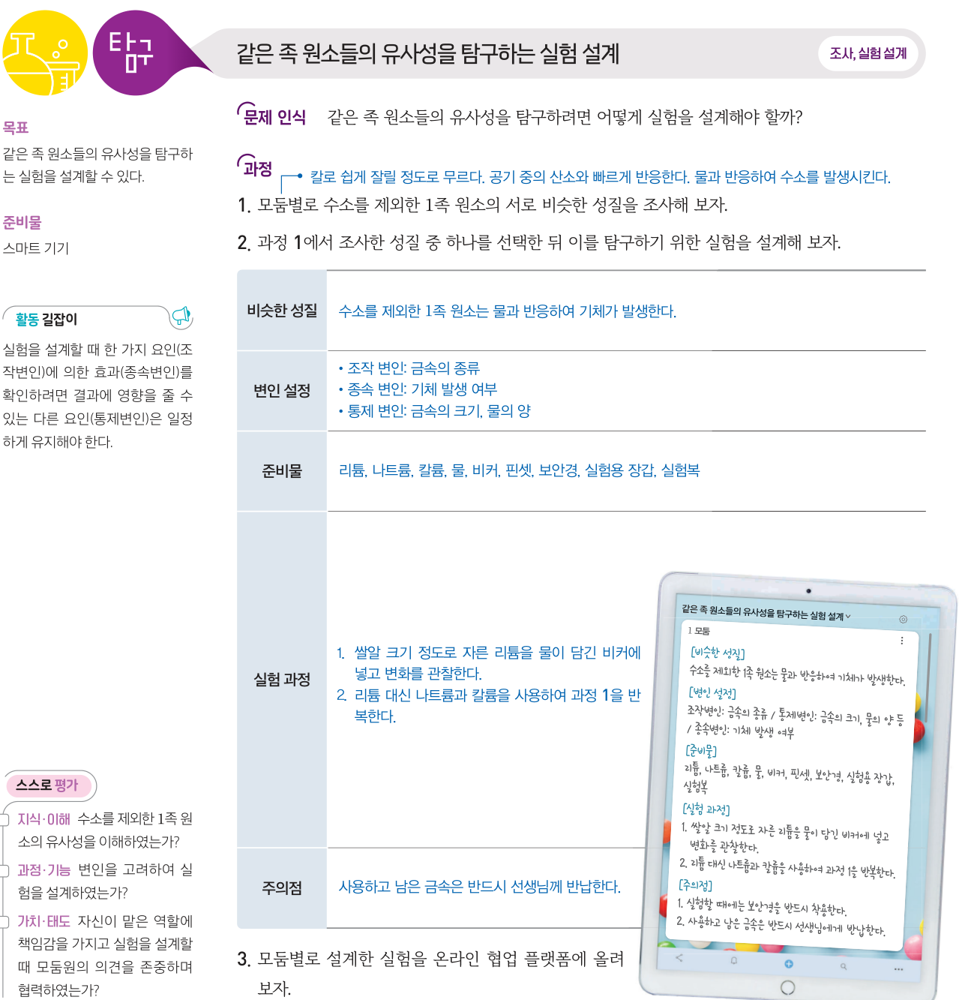
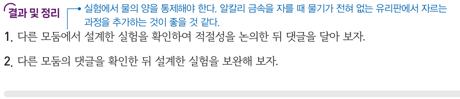
[핵심 이론] 실험 설계에서 조작 변인 하나만 바꾸고 나머지(금속의 크기, 물의 양·온도)는 통제한다. 동료 평가는 구체적 준거에 따라 근거 있는 피드백을 주어야 학습에 도움이 되며, 자기 평가와 함께 평가의 과정이 성찰의 기회가 되게 한다.
[교육과정 근거] [10통과1-02-03]·탐구 활동 ‘같은 족 원소들의 유사성을 탐구하는 실험 설계하기’, 해설(1족과 17족으로 동족 원소의 유사성). 교수·학습 방법 (마): 화학 약품 안전 사항 사전 지도, 폐기물의 적법한 처리. 평가 방법: 개별·모둠 평가, 자기 평가와 동료 평가.
[채점 포인트] ㉠은 ‘크기 불통제 → 원인 구분 불가 → 같은 크기’. ㉡·㉢은 각각 위험 요인과 안전한 수정이 있어야 한다. 동료 평가 준거는 변인·안전·타당성 등 설계의 질을 판단할 수 있는 진술로 2가지.
[출제 포인트] 교과서 탐구(설계표: 변인·준비물·과정·주의점, 협업 플랫폼 댓글 보완)의 오류 수정형. 교수·학습 방법(안전·폐기물)·평가 방법(자기·동료 평가) 원문. 2018 화학(Li·Na 안전), 2022 화학 A7(동료 평가 준거).
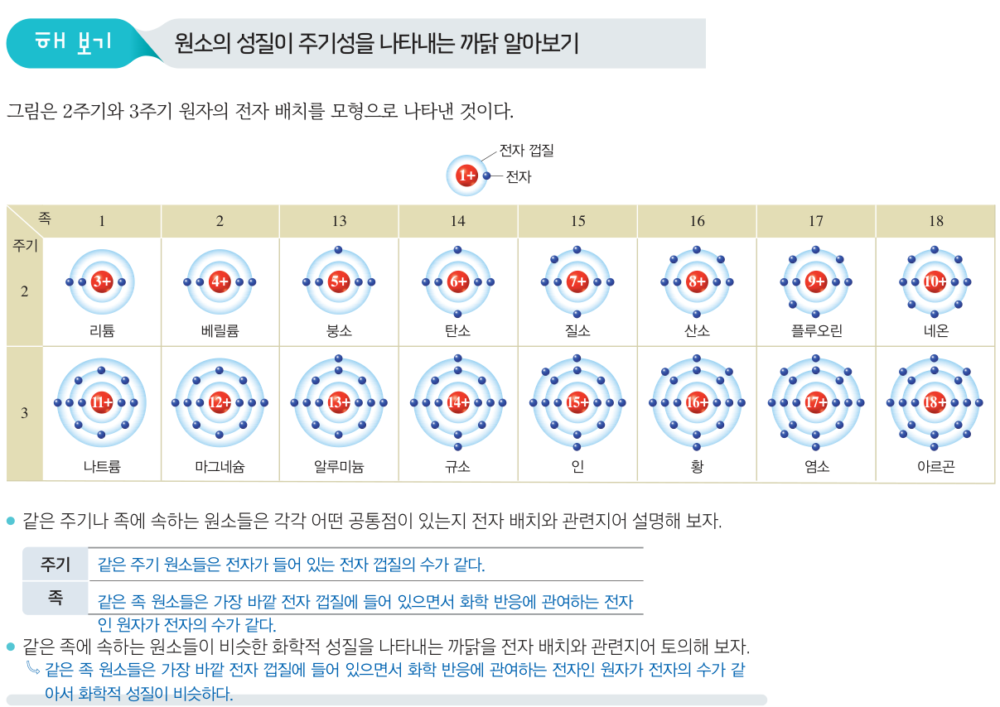
[핵심 이론] 오스본과 위트록의 발생 학습 모형: 예비 단계(학생 선개념 조사) → 초점 단계(구체적 현상에 초점, 자신의 생각 명료화) → 도전 단계(생각 비교·토론, 과학적 견해 제시와 비교) → 적용 단계(새로운 상황에 적용).
[교육과정 근거] [10통과1-02-03] 성취기준과 해설(결합 형성 이유를 전자껍질 모형을 이용한 전자배치로 설명). 교수·학습 방법: 모형과 실제의 차이, 과학적 모델의 특성 지도.
[채점 포인트] (나) 초점, (다) 도전을 정확히. 오개념 수정은 ‘전자 수(원자 번호)는 다르다’와 ‘원자가 전자 수가 같다’를 모두 포함하고, 18족 원자가 전자 0을 써야 만점. ㉡은 교과서의 전자 껍질 모형 수준과 비교해 판단.
[출제 포인트] 교과서 해 보기(2·3주기 전자 배치 모형 → 같은 주기·족 공통점, 원자가 전자의 주기성)를 발생 학습 모형(예비–초점–도전–적용) 단계로 구성(2018 화학 논술). ‘같은 족 = 전자 수 같음’ 오개념, 18족 원자가 전자 0, [10통과1-02-03] 성취기준 해설 원문 빈칸(전자껍질 모형)으로 모형 수준 판단. 교수·학습 방법 원문(과학적 모델의 특성).
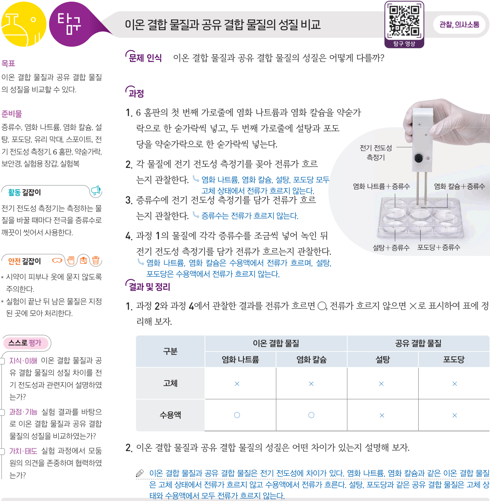
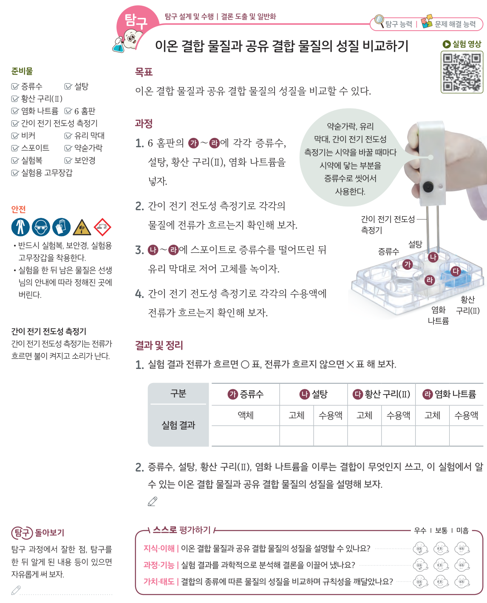
[핵심 이론] 드라이버의 개념 변화 학습 모형: 오리엔테이션 → 생각의 표현 → 생각의 재구성(명료화와 교환 → 갈등 상황에의 노출 → 새로운 생각의 구성 → 새로운 생각의 평가) → 생각의 적용 → 생각의 검토.
[교육과정 근거] [10통과1-02-04] 해설: 각 화학 결합으로 나타나는 성질은 전기 전도성에 한정. 탐구 활동 ‘이온 결합 화합물과 공유 결합 화합물의 성질을 비교하는 실험하기’. 교수·학습 방법: 지적 호기심과 학습 동기를 유발하는 발문, 개방형 질문 활용.
[채점 포인트] 학생 A의 반례는 설탕 수용액, 학생 B의 반례는 고체 염화 나트륨(전류 ×). ‘염화 나트륨 분자’는 이온 결합 물질의 구조(독립된 분자 없음)로 지적. ㉣은 ‘전극 오염 → 증류수 세척’.
[출제 포인트] 두 출판사 공통 탐구(고체·수용액 전기 전도성)를 드라이버 모형(생각의 재구성: 명료화와 교환 → 갈등 상황 노출 → 새로운 생각의 구성 → 평가)으로 구성(2025 화학 A7, 2019 화학). ‘염화 나트륨 분자’ 오개념, 전극 세척(탐구 유의점), [10통과1-02-04] 해설 원문 빈칸(전기 전도성에 한정), 교수·학습 방법 원문(개방형 질문).
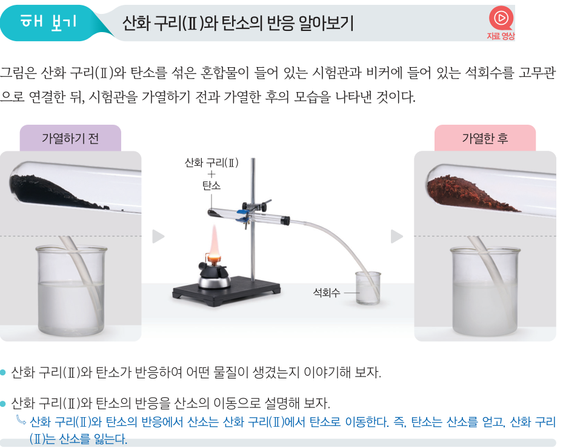
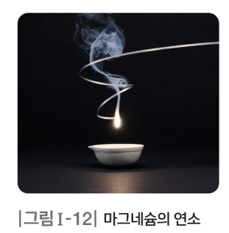
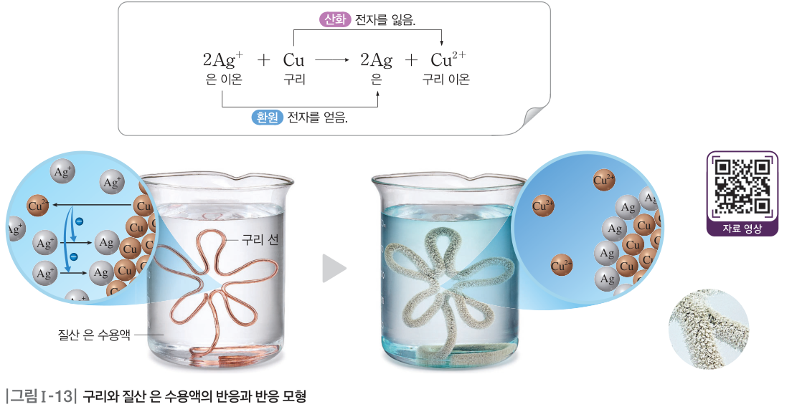
[핵심 이론] 오수벨의 포섭: 파생적 포섭(기존 개념의 예로 포섭), 상관적 포섭(기존 개념을 확장·수정·정교화), 상위적 학습, 병위적 학습. 산화·환원 정의가 산소의 이동에서 전자의 이동으로 넓어지는 과정은 과학 지식의 잠정성을 보여 주는 소재이다.
[교육과정 근거] [10통과2-01-03] 성취기준과 해설: 산화・환원 반응을 산소와 전자의 이동으로 설명하되, 산화수는 다루지 않는다(2024 화학 A7 출제). 교수·학습 방법: 과학 지식의 잠정성 등 과학의 본성 지도.
[채점 포인트] ‘상관적 포섭’과 ‘기존 개념의 확장·정교화’ 근거. 2차시 반응은 Cu(전자 잃음, 산화)와 Ag⁺(전자 얻음, 환원)을 모두, 동시성은 ‘잃은 전자를 얻음’으로. ㉡은 산화수 범위, ㉢은 정의 변천을 소재로 한 지도 방법까지.
[출제 포인트] 교과서 해 보기(산화 구리(Ⅱ) + 탄소, 석회수)와 본문(구리 선 + 질산 은 입자 모형)으로 정의 확장 수업 구성. 오수벨 상관적 포섭, 산화·환원 동시성, [10통과2-01-03] 성취기준·해설 원문(산화수는 다루지 않음, 2024 화학 A7), 교수·학습 방법 원문(과학 지식의 잠정성, 2016 화학).
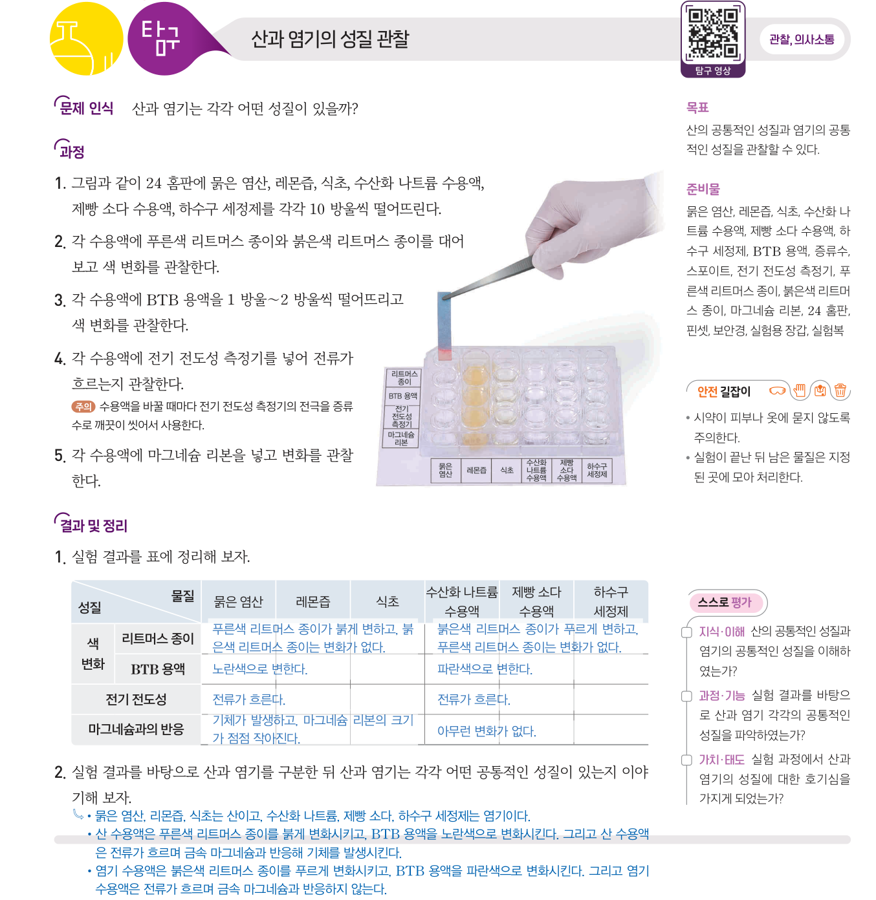
[핵심 이론] 기초 탐구 과정: 관찰, 분류, 측정, 예상, 추리 등. 귀납적 일반화는 관찰 사례에서 규칙을 이끌어 내지만 반례 하나로 무너질 수 있다. 아레니우스 정의: 산은 수용액에서 H⁺을, 염기는 OH⁻을 내놓는 물질.
[교육과정 근거] [10통과2-01-04] 해설: 산・염기 정의는 아레니우스 정의만 다룸. 평가 방법: 문제 인식 및 가설 설정, 탐구 설계 및 수행, 자료 수집·분석 및 해석, 결론 도출 및 일반화, 의사소통과 협업 관련 과정·기능 평가.
[채점 포인트] (1)은 ‘분류’. ㉠은 ‘Mg가 기체로 변한 것이 아니라 수소 기체 발생’을 명시. ㉡은 추론 유형(귀납적 일반화)·오류(과잉 일반화)·수정(H⁺을 내놓는가로 판단)을 모두. 평가 요소는 이 탐구 상황에 맞는 행동 진술.
[출제 포인트] 교과서 탐구(리트머스·BTB·전기 전도성·마그네슘 반응)의 보고서 오류 분석형. 마그네슘 기체 오개념, ‘H가 있으면 산’ 과잉 일반화(에탄올 반례), [10통과2-01-04] 해설 원문 빈칸(아레니우스 정의만 다룸). 평가 방법 원문의 과정·기능 범주 빈칸.
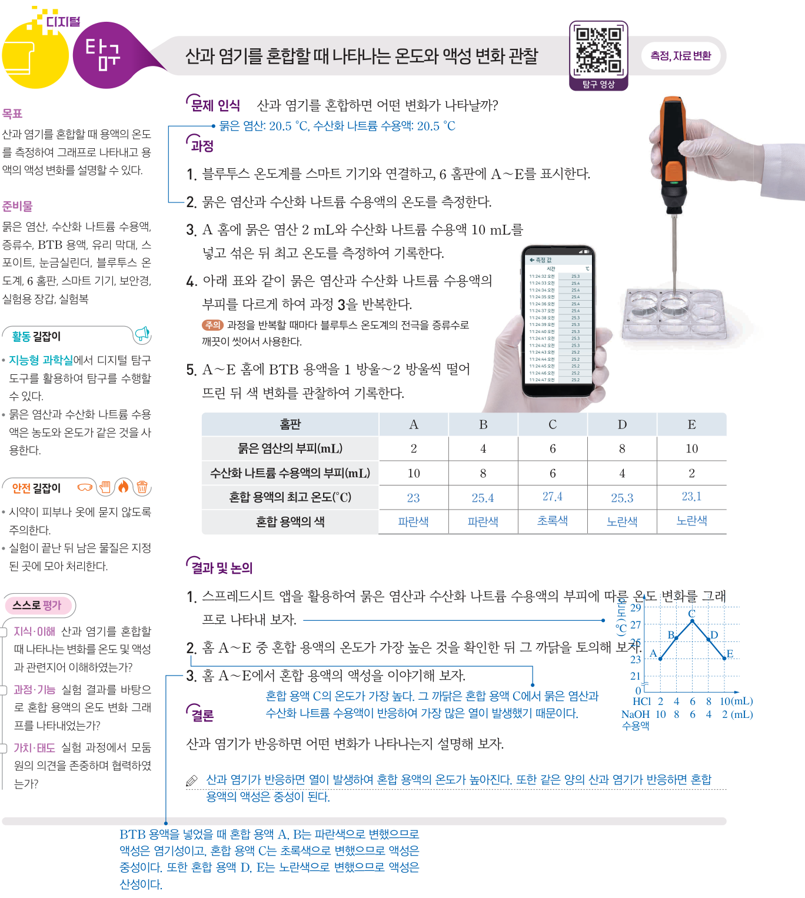
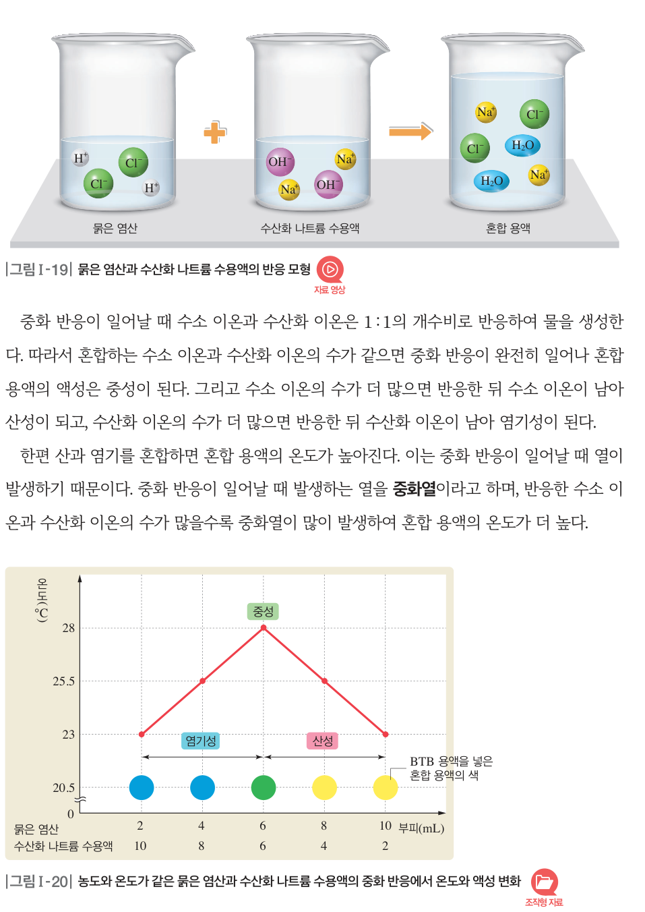
[핵심 이론] 5E 모형: 참여(Engage) → 탐색(Explore) → 설명(Explain) → 정교화(Elaborate) → 평가(Evaluate). 정교화 단계는 설명 단계에서 형성한 개념을 새로운 상황에 적용해 확장·심화한다.
[교육과정 근거] [10통과2-01-04] 탐구 활동 ‘산과 염기를 혼합할 때 용액의 온도를 측정하여 그래프로 나타내기’, 해설: 중화 반응 과정의 변화는 온도 변화와 지시약 색 변화만. 교수·학습 방법 (다): 지능형 과학실을 활용한 탐구 실험·실습 중심 교수·학습.
[채점 포인트] ㉠ 정교화와 특징. 모둠 2는 ‘농도(온도) 불일치 → 최고 온도 위치 이동’, 개선은 ‘같은 농도·온도 용액’. ㉢은 ‘일부 중화 + 남은 H⁺ → 산성’. ㉣은 정량 계산(몰 농도)이 수준을 벗어난다는 판단.
[출제 포인트] 교과서 디지털 탐구(A~E 혼합 비율, 최고 온도, BTB 색, 이온 수 표)를 5E(정교화, 2025 물리·지구 B3)로 구성. 용액 농도 불일치에 따른 자료 해석, ‘노란색 = 반응 안 함’ 오개념, [10통과2-01-04] 탐구 활동·해설 원문(온도 변화와 지시약 색 변화만), 교수·학습 방법 원문(지능형 과학실).
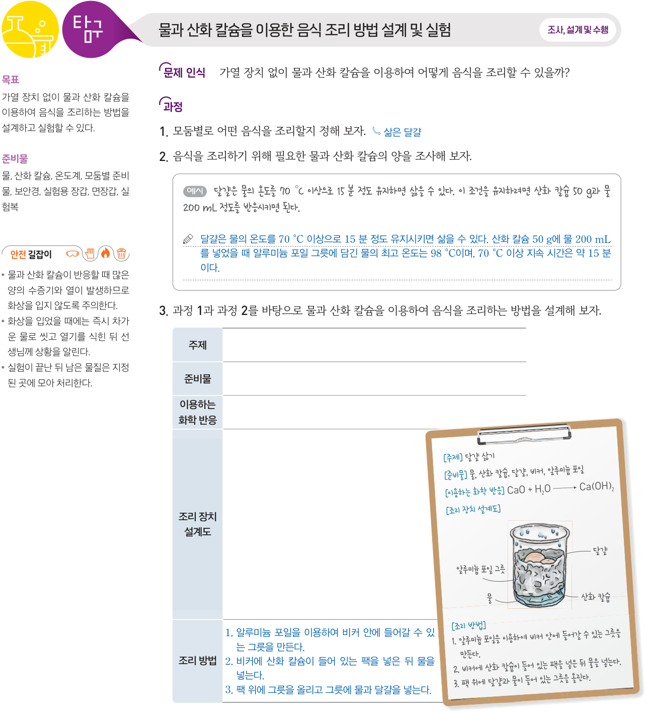
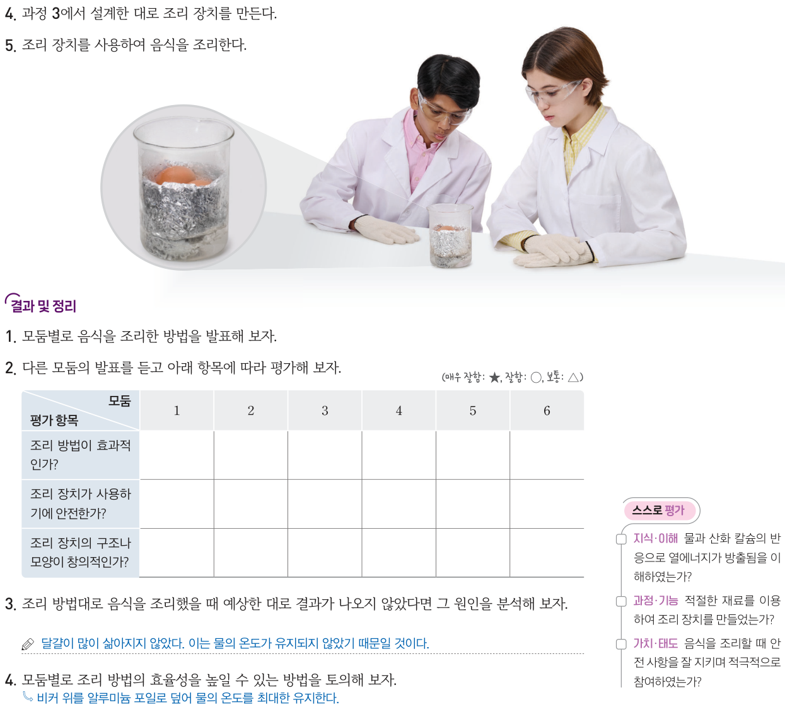
[핵심 이론] 문제 중심 학습(PBL): 비구조화된 실제 문제 제시 → 문제 확인(알고 있는 것 / 알아야 할 것 / 알아볼 방법) → 자기 주도적 탐색 → 해결안 설계·적용 → 발표와 평가·성찰. 교사는 촉진자 역할을 한다.
[교육과정 근거] [10통과2-01-05] 성취기준·탐구 활동(물과 산화 칼슘 음식 조리), 해설: 열화학 반응식·엔탈피는 다루지 않음. 교수·학습의 방향 (다): 일상생활 소재와 실험·실습으로 실제적인 맥락에서 문제 해결 경험 제공.
[채점 포인트] 문제의 특징은 ‘비구조화(정답·해결법 열려 있음)’. 원인 2가지는 반응물·물의 양 비율과 열 손실(용기 재질·열 전달)을 각각 개선 방법과 짝지어. ㉡은 수증기·압력 → 파열·화상 위험과 대책.
[출제 포인트] 교과서 탐구(물 + 산화 칼슘 조리 장치 설계·실험, 달걀 70 ℃·15분, 산화 칼슘 50 g·물 200 mL 예시, 화상 주의)를 PBL(2022 화학 B5)로 구성. 결과가 예상과 다를 때 원인 분석, 안전 유의점(수증기·밀폐), [10통과2-01-05] 성취기준·탐구 활동·해설 원문(열화학 반응식·엔탈피 다루지 않음), 교수·학습의 방향 원문(실제적인 맥락).
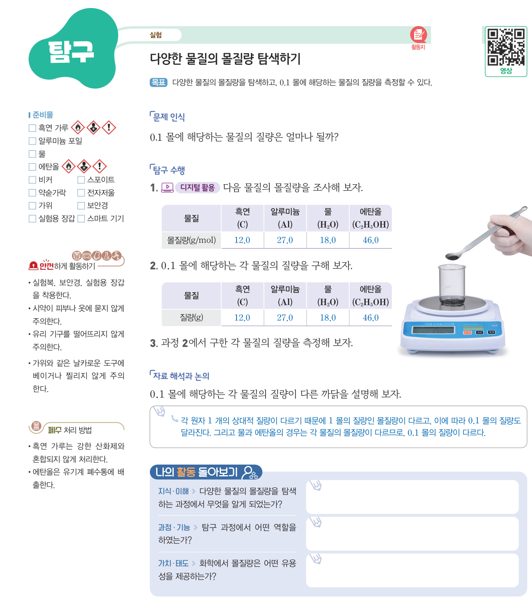
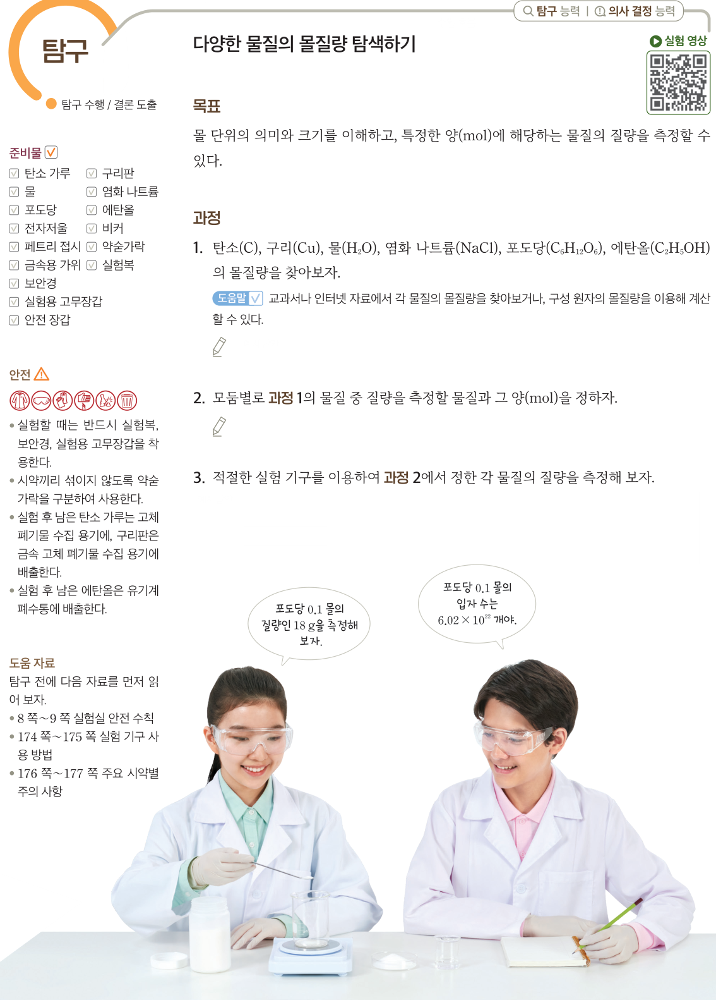
[핵심 이론] 피아제의 형식적 조작기 사고 도식: 비례 논리, 변인 통제, 확률적 사고, 상관 논리, 조합 논리. 몰 환산(몰 수 ↔ 질량 ↔ 입자 수)은 몰질량·아보가드로수를 비례 상수로 하는 비례 추론이므로, 구체적 조작기 학생은 공식만 기억하고 ‘다스’ 같은 비유를 몰질량 환산으로 옮기지 못한다.
[교육과정 근거] [12화학01-02] 성취기준과 탐구 활동(특정한 몰수에 해당하는 물질의 질량 측정하기), 성취기준 적용 시 고려 사항: 몰은 기본 물리량으로 학생들이 수치적 계산에 치우치지 않고 물질의 양 표현에 대한 편리성을 인식하도록 지도.
[채점 포인트] 학생 A 오류는 ‘1 몰의 질량을 그대로 씀 → ×0.1’, ㉡은 ‘질량 ÷ 밀도 ≈ 5.8 mL’. ㉠은 ‘입자 1개의 질량이 다름’이 핵심. 도식은 ‘비례 논리’. ㉢ 수치적 계산과 그 취지를 살린 의미 중심 지도 방안.
[출제 포인트] [12화학01-02] 성취기준·탐구 활동·고려 사항 원문(수치적 계산에 치우치지 않음). 교과서 탐구의 1 몰/0.1 몰 혼동(지도서 답 칸 오류를 학생 오류로 재구성), 질량·부피 혼동, 피아제 비례 논리(2017 화학 몰, 2021 화학 A5).
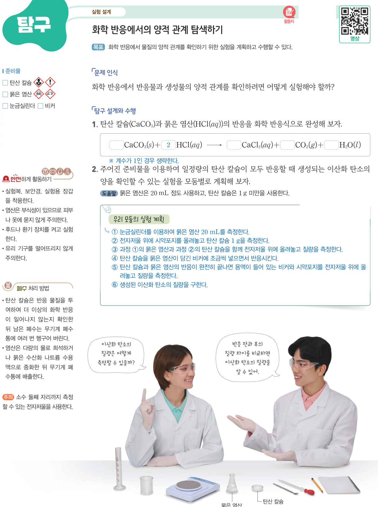
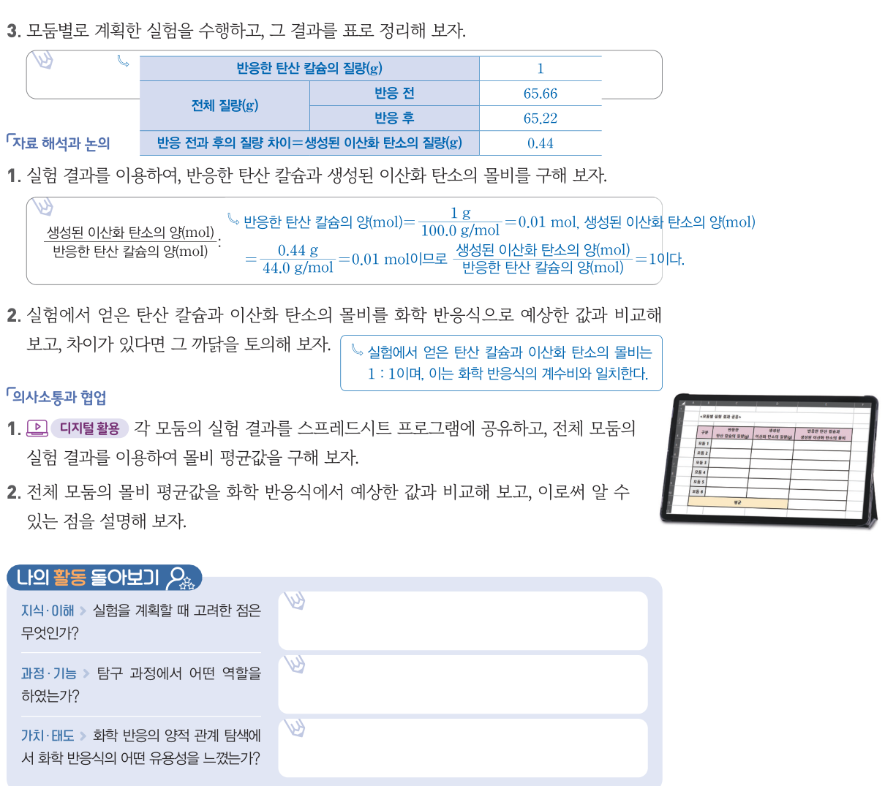
[핵심 이론] STAD(Slavin): 교사의 수업 → 모둠 학습 → 개별 퀴즈 → 향상 점수 산출 → 모둠 보상. 향상 점수는 기본 점수 대비 성취를 반영해 모든 학생에게 동등한 성공 기회를 주고, 개별 퀴즈는 개별적 책무성, 모둠 보상은 긍정적 상호 의존성을 확보한다.
[교육과정 근거] [12화학01-03] 탐구 활동(화학 반응에서의 양적 관계를 확인할 수 있는 실험 계획·수행)과 성취기준 해설(화학 반응식의 계수비는 몰수비, 몰질량을 이용하여 몰수로 표현).
[채점 포인트] ㉠ 계수. 모둠 2(넘침 → CO₂ 질량 과대 → 몰비 큼), 모둠 3(미반응 CaCO₃ → 반응량 과대 계산 → 몰비 작음)을 원인-개선 쌍으로. P 30점, Q 10점 계산과 ‘동등한 성공 기회’. 개별적 책무성.
[출제 포인트] 교과서 탐구(CaCO₃ 1 g + 묽은 염산, 반응 전후 질량 차로 CO₂ 측정, 모둠 평균) + 탐구 활동·해설 원문 빈칸(계수비 = 몰수비). STAD 향상 점수(2020 화학 A6) 계산과 개별적 책무성.
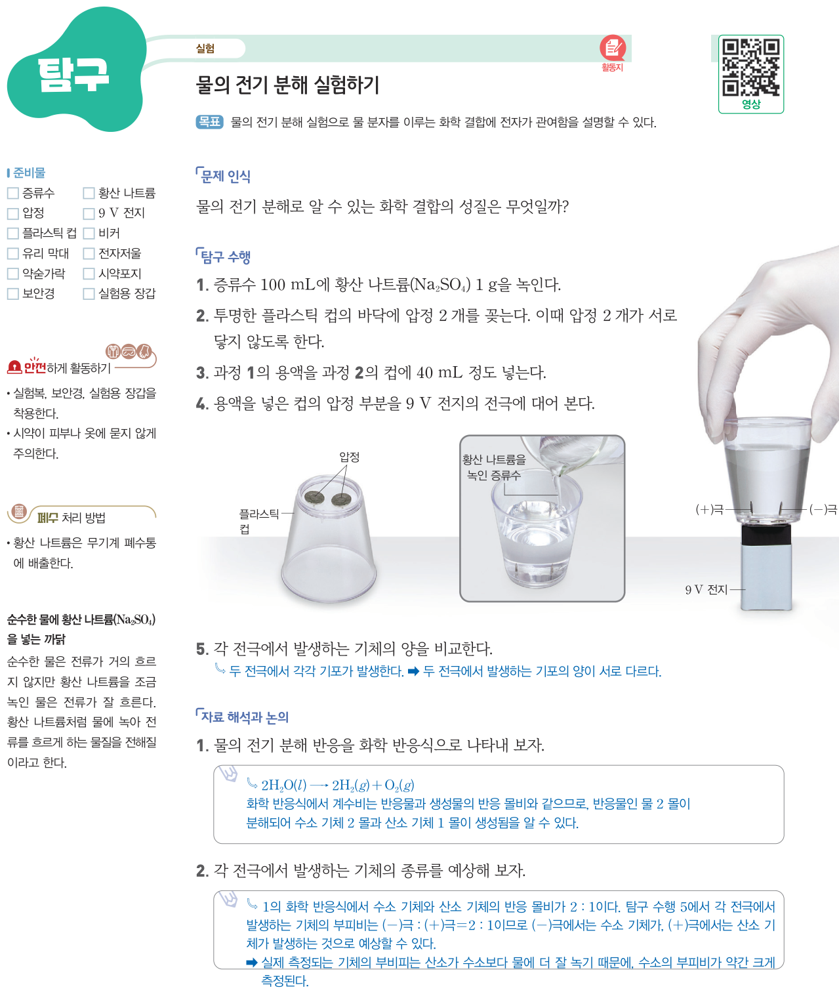
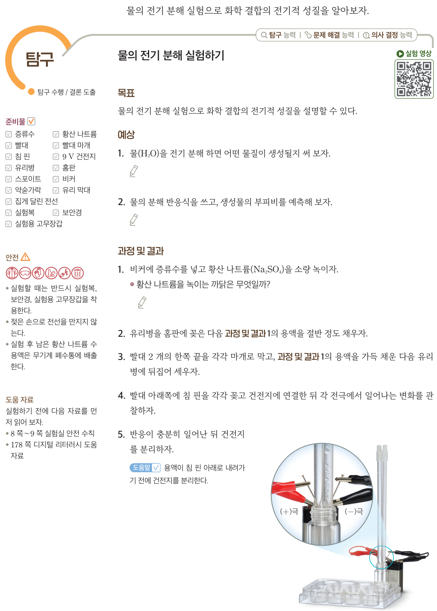
[핵심 이론] 핸슨의 관찰의 이론 의존성: 같은 대상을 보아도 관찰자가 가진 이론·기대에 따라 다르게 본다(‘보는 것’에는 해석이 포함됨). 탐구 지도에서는 관찰과 추리를 구분하고, 객관적 측정 방법을 미리 정하게 한다.
[교육과정 근거] [12화학02-01] 성취기준(화학 결합의 전기적 성질)과 탐구 활동(물의 전기 분해 실험하기), 성취기준 적용 시 고려 사항: 개인 보호 장구 착용, 실험실 안전 수칙, 폐수·폐기물 처리 기준.
[채점 포인트] ‘관찰의 이론 의존성’ 명시와 R·S의 기대 차이 연결. Na₂SO₄는 전해질(분해 ×), ㉡은 금속 이온 환원 석출. 부피비 오차는 ‘O₂가 H₂보다 물에 잘 녹음’. ㉢ 개인 보호 장구. 결론은 ‘화학 결합에 전자가 관여’.
[출제 포인트] 교과서 탐구(Na₂SO₄ 1 g, 압정 전극, 9 V 전지)에서 기대에 따른 관찰 차이를 관찰의 이론 의존성(2021 화학 B4, 2025 화학 B4)으로 구성. 전해질 역할 오개념, 수돗물 사용 시 금속 석출(오개념 지점 재구성), O₂ 용해에 따른 부피비 오차, [12화학02-01] 성취기준·탐구 활동·고려 사항 원문 빈칸(개인 보호 장구).
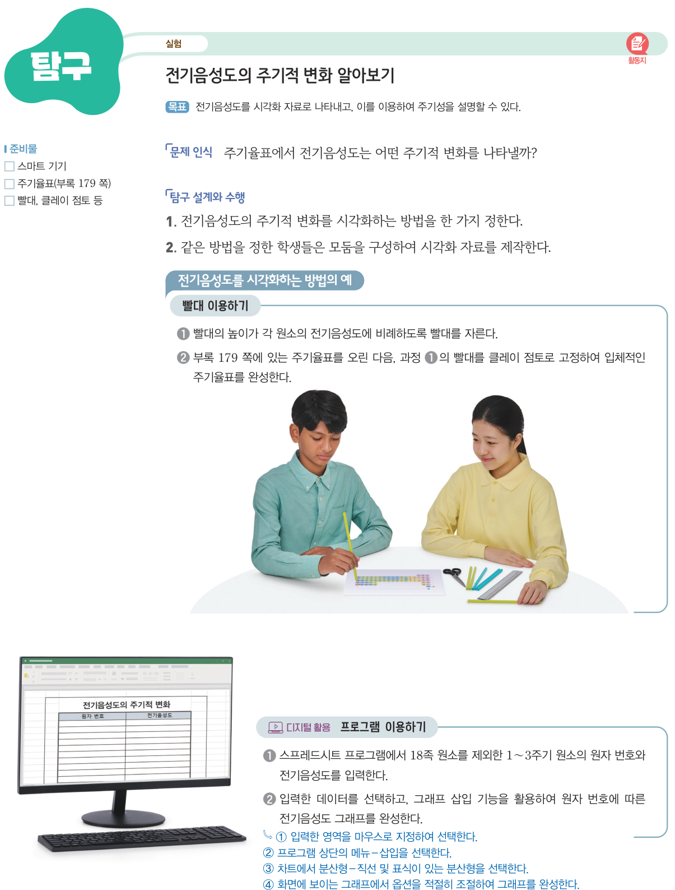
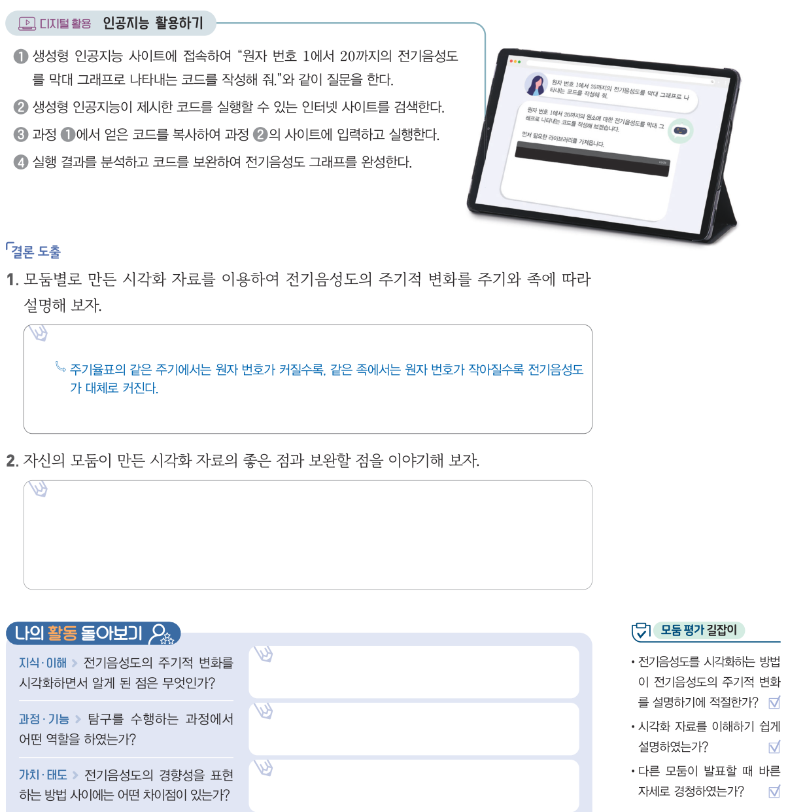
[핵심 이론] Jigsaw Ⅰ(Aronson): 모집단 → 전문가 집단 → 모집단 재소집·교수 → 개별 평가(개별 보상). Jigsaw Ⅱ(Slavin): 개별 퀴즈 후 STAD식 향상 점수로 모둠 보상을 더해 상호 의존성을 높인다. Jigsaw Ⅲ는 평가 전 모집단 복습 단계를 둔다.
[교육과정 근거] [12화학02-02] 성취기준(전기 음성도 차이와 쌍극자 모멘트로 결합의 극성 판단)과 해설(쌍극자 모멘트는 정성적으로 다룸). 교수·학습 방법 (다): 디지털 소양 함양, 다양한 디지털 탐구 도구 및 환경 활용.
[채점 포인트] ㉠ 전문가 집단, Jigsaw Ⅱ 근거는 ‘향상 점수 기반 모둠 보상’. ㉡은 ‘18족 값 없음(폴링) → 근거 없는 자료’와 ‘검증 지도’ 모두. ㉣ 정성적, ㉢은 정량 계산이 범위 밖이라는 판단.
[출제 포인트] 교과서 탐구의 시각화 방법 3가지(빨대, 스프레드시트, 생성형 인공지능 코드)를 Jigsaw Ⅱ(2024 화학 A5)로 재구성. [12화학02-02] 해설 원문 빈칸(정성적), 교수·학습 방법 (다) 디지털 소양·디지털 탐구 도구, AI 산출물 검증(2025 화학 A5).
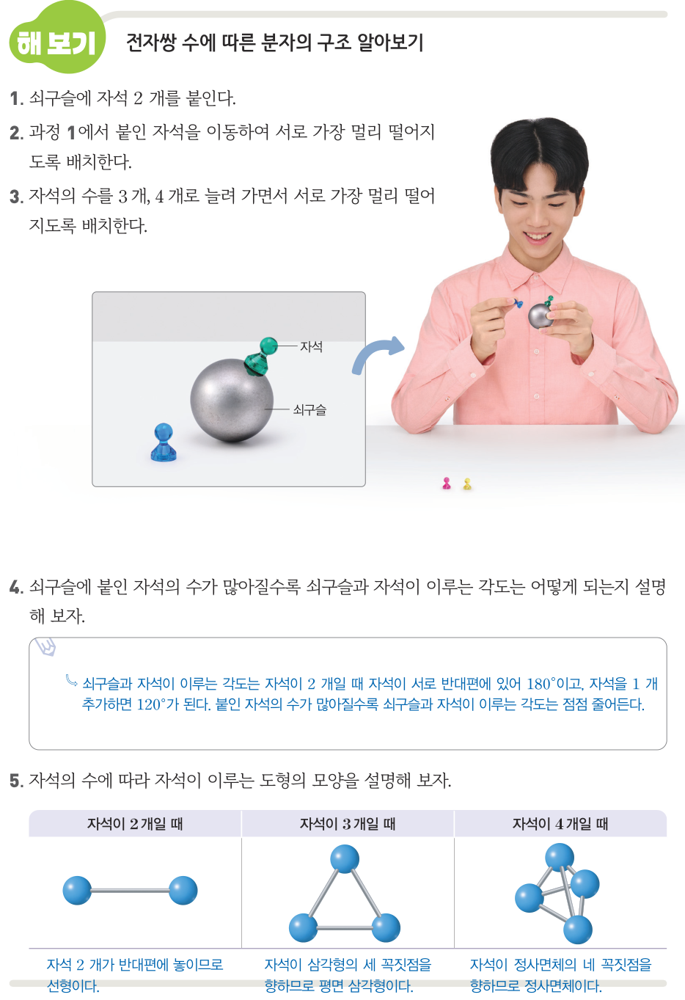
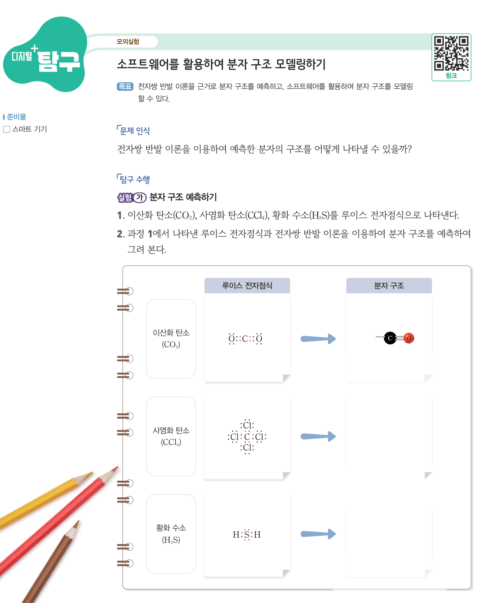
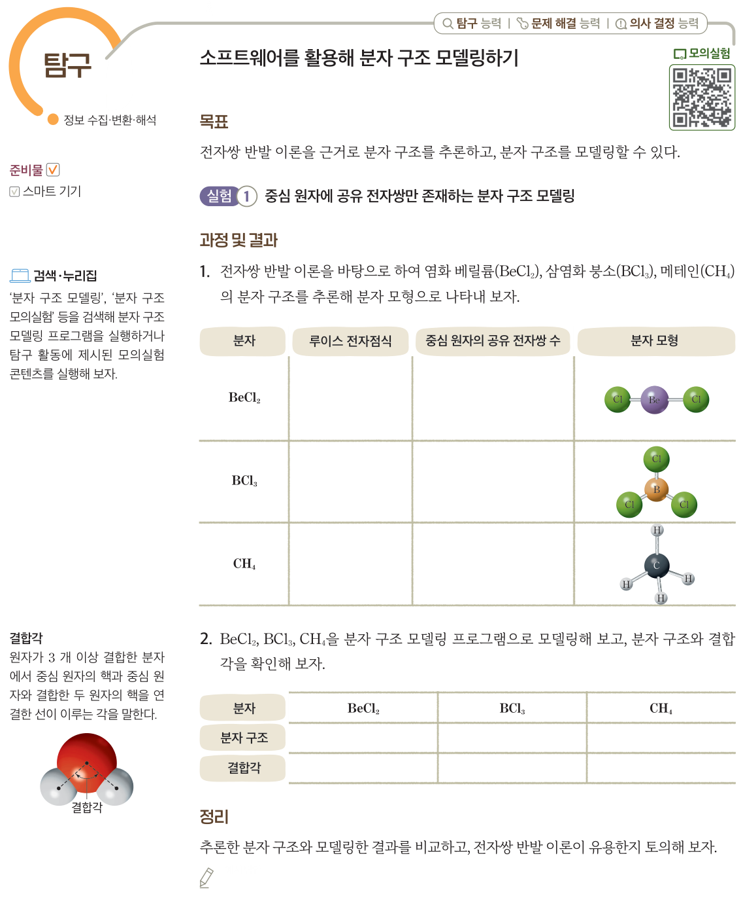
[핵심 이론] 로슨의 순환학습 유형: 서술적(관찰·규칙성 기술, 가설 없음), 경험-귀추적(현상의 원인을 귀추로 설명), 가설-연역적(인과적 질문 → 대안 가설 → 예측 연역 → 검증). 전자쌍 반발 이론에서 비공유 전자쌍의 반발 > 공유 전자쌍의 반발이므로 결합각은 CH₄ 109.5° > NH₃ 107° > H₂O 104.5°.
[교육과정 근거] [12화학02-03] 성취기준(루이스 전자점식, 전자쌍 반발 이론으로 분자 구조 추론·모형 표현)과 해설(중심 원자는 2, 3주기 전형 원소 중 Be, B와 옥텟 규칙을 따르는 경우로 한정). 교수·학습 방법: 모형과 실제 자연 현상의 차이.
[채점 포인트] 1차시 서술적, 2차시 가설-연역적과 ‘가설 유무·예측의 연역’ 근거. ㉠ 수정은 비공유 전자쌍 수와 반발 크기, 107°·104.5°. 모형의 한계는 ‘전자쌍을 구분하지 못함’. ㉢ 옥텟 규칙, ㉡은 확장 옥텟 → 범위 밖.
[출제 포인트] 교과서 해 보기(쇠구슬·자석)와 디지털 탐구(분자 구조 모델링)를 로슨 서술적/가설-연역적 순환학습으로 대비(2025 화학 B3, 2022 화학 B4). [12화학02-03] 해설 원문 빈칸(옥텟 규칙), 모형의 한계(교수·학습 방법 원문).
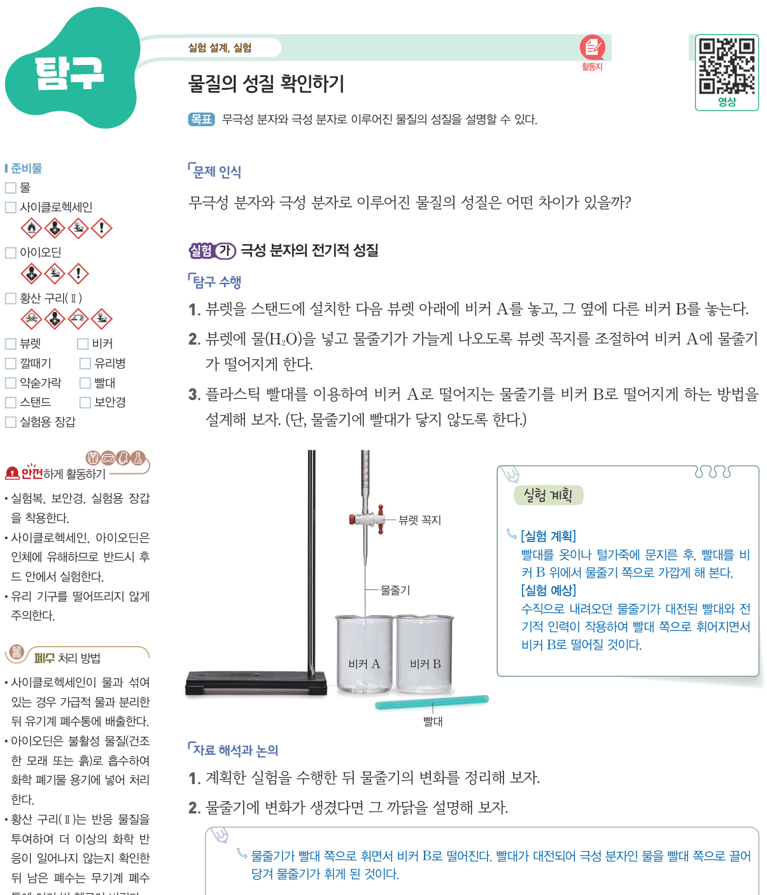
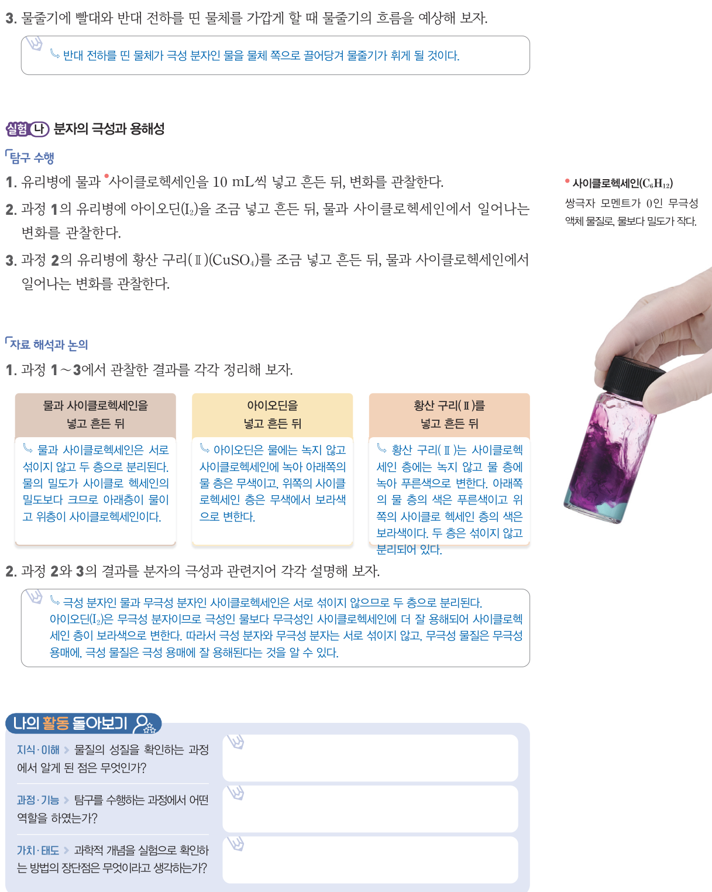
[핵심 이론] 포퍼의 반증주의: 과학 이론은 반증 가능해야 하며 반증 사례가 나오면 폐기한다. 반증을 피하려 검증 불가능한 보조 가설을 덧붙이는 임시방편적(ad hoc) 수정은 반증 가능성을 낮추므로 배격한다. (한계: 라카토슈는 보호대 수정으로 핵심을 지키는 것을 허용)
[교육과정 근거] [12화학02-04] 성취기준(물질의 성질을 분자의 구조와 연관 짓고 호기심). 교수·학습 방법: 실험 기구 사용 방법과 실험 약품에 대한 물질안전보건자료 안내, 실험실 안전 교육.
[채점 포인트] ‘포퍼의 반증주의’와 ‘임시방편 가설 → 반증 가능성 감소’. 수정 가설은 ‘휘는 정도’ 비교로, 조작 변인(액체 종류·극성)과 종속 변인(휘는 정도) 정확히. ㉡은 휘발성·유해성 → 후드·마개. ㉢ 물질안전보건자료.
[출제 포인트] 교과서 탐구(물줄기·대전된 빨대, 아이오딘·황산 구리의 용해성)와 ‘무극성 액체도 조금 휘는’ 오개념 지점을 포퍼 반증주의·임시방편 가설(2024 물리 A6, 2018 화학)로 구성. [12화학02-04] 성취기준, 교수·학습 방법 (마) 원문 빈칸(물질안전보건자료).
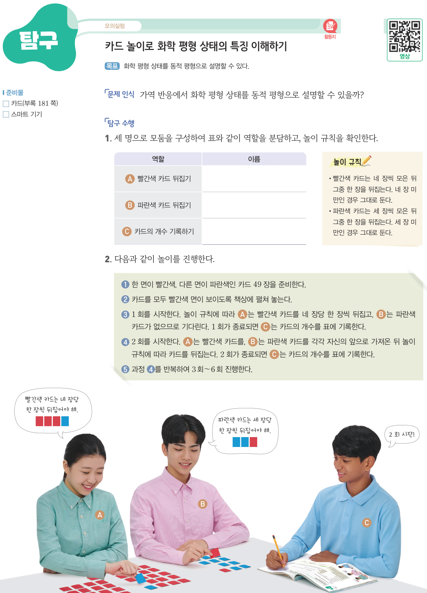
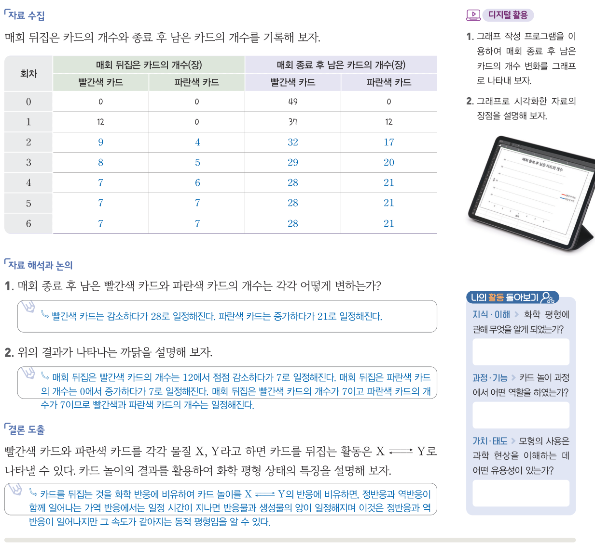
[핵심 이론] 존스톤의 화학 지식 삼중 수준: 거시적(관찰 가능한 현상), 미시적(입자 수준), 상징적(기호·식). 초보 학습자에게 세 수준을 동시에 제시하면 작업 기억 용량을 넘어 인지 과부하가 생기므로, 거시적 수준에서 출발해 점진적으로 연결한다. 동적 평형: 정반응 속도 = 역반응 속도, 농도 일정(같을 필요 없음).
[교육과정 근거] [12화학03-01] 해설(거시적으로 관찰 가능한 화학 평형 상태의 특징과 동적 평형 상태를 구분하여 다룸), 고려 사항(실험을 직접 수행하기 어려운 경우 모의실험 등 활용).
[채점 포인트] (가) 거시, (나) 미시(모형), (다) 상징과 ‘인지 부담’. ㉠은 매회 7장씩 뒤집힘(반응 지속), ㉡은 28 ≠ 21(일정 ≠ 같음). ㉣ 동적 평형, ㉤ 모의실험, ㉢은 NO₂ 독성.
[출제 포인트] 교과서 모의실험(카드 놀이, 0~6회 자료)과 NO₂/N₂O₄ 평형을 존스톤의 삼중 수준으로 구성. ‘반응이 멈춘다’·‘농도가 같아진다’ 오개념, [12화학03-01] 해설(동적 평형)·고려 사항(모의실험) 원문 빈칸.
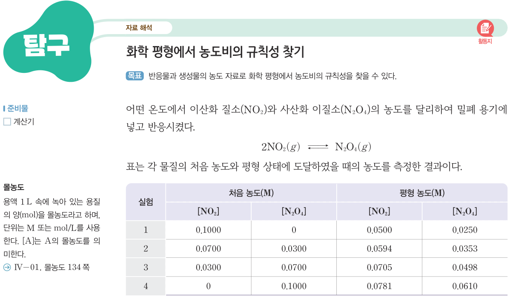
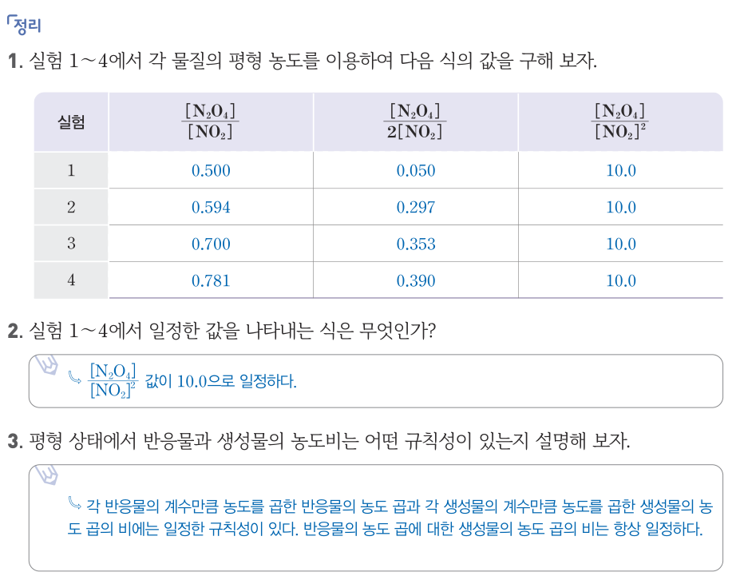
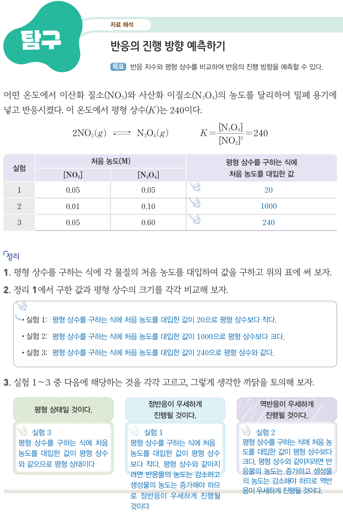
[핵심 이론] 귀납적 추론: 개별 관찰·자료에서 일반적 규칙을 이끌어 냄(평형 농도 자료 → 평형 상수식). 연역적 추론: 일반 원리를 특정 사례에 적용해 결론 예측(Q와 K 비교 → 진행 방향). Q > K이면 역반응 쪽, Q < K이면 정반응 쪽으로 알짜 반응이 진행되며, 양방향 반응은 계속 일어난다.
[교육과정 근거] [12화학03-02] 탐구 활동(자료 해석을 통해 화학 평형에서 농도비의 규칙성을 찾는 탐구), 해설(몰 농도는 필요한 정도로만, 압력 평형 상수는 다루지 않음).
[채점 포인트] ㉠ 0.250으로 수정. 1차시 귀납·2차시 연역과 각각의 근거. Q = 1000 > K = 240 → 역반응 쪽. ㉡은 ‘정반응도 일어남, 역반응 속도가 더 큼’. ㉣ 압력 평형 상수와 범위 판단.
[출제 포인트] 교과서 자료 해석 탐구(평형 농도비, 처음 농도 대입)를 귀납(1차시)과 연역(2차시)으로 대비. 지도서 정답 오류(0.050)를 학생 오류로 재구성, ‘Q>K이면 역반응만’ 오개념, [12화학03-02] 탐구 활동·해설 원문 빈칸(압력 평형 상수).
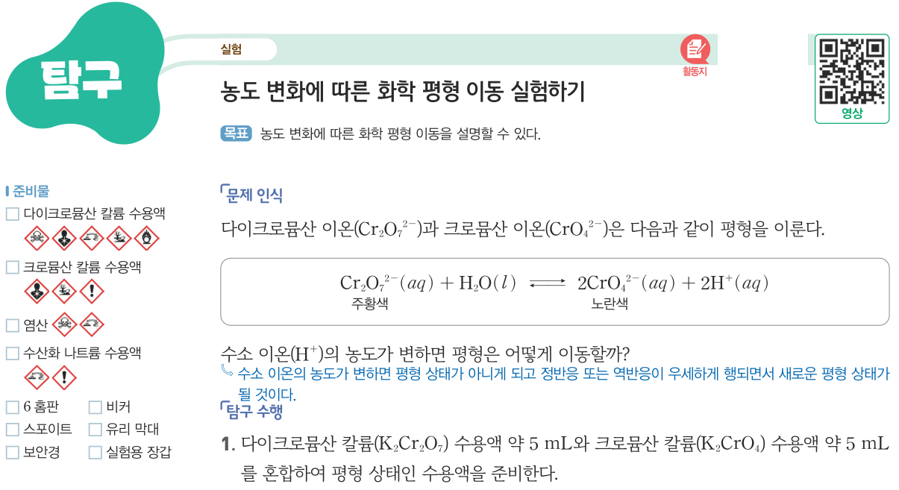
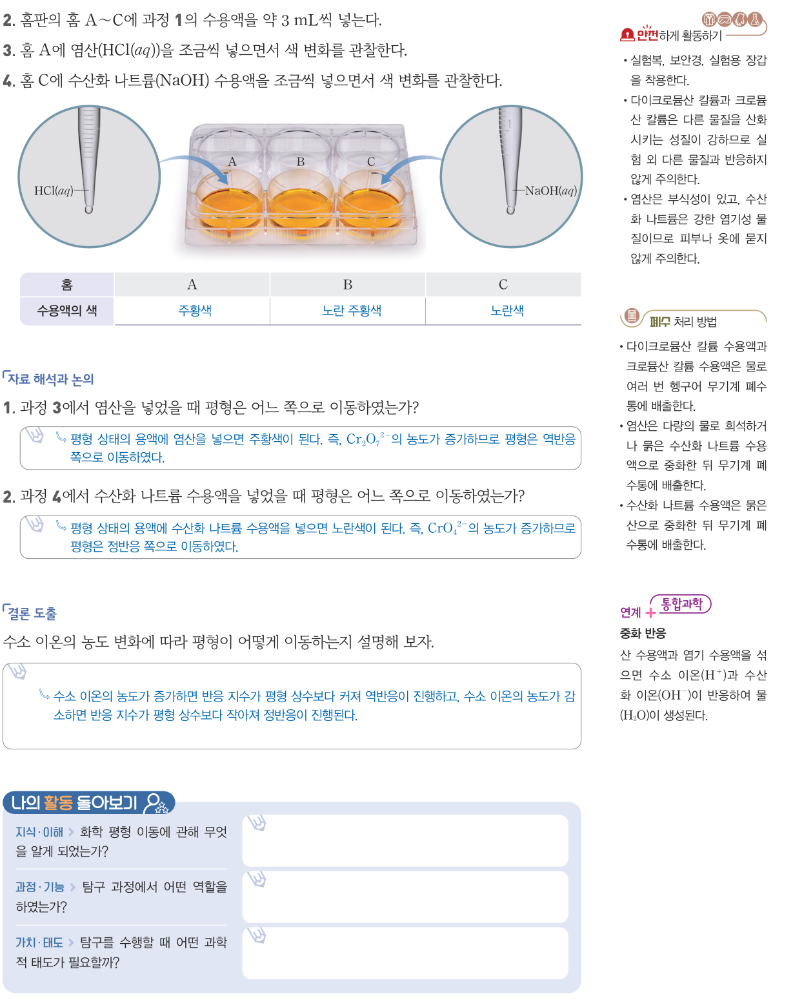
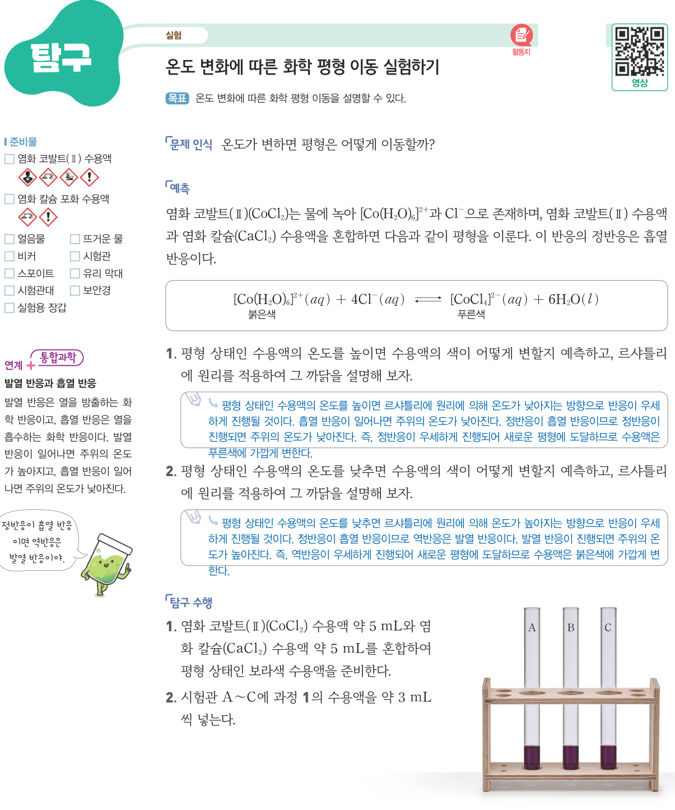
[핵심 이론] POE(White & Gunstone): 예측(선개념 표면화·공언) → 관찰 → 설명(예측과 관찰 불일치 해소). 르샤틀리에 원리: 평형 상태에 변화를 주면 그 변화를 줄이는 방향으로 평형이 이동한다. 온도 상승은 정·역반응 속도를 모두 높이지만 흡열 방향을 더 크게 높인다.
[교육과정 근거] [12화학03-04] 성취기준(농도, 압력, 온도 변화에 따른 평형 이동과 일상생활 적용)과 고려 사항(생명 현상·산업 현장에서 수득률을 높이기 위한 화학 평형 이용 사례 조사, 진로 탐색).
[채점 포인트] 예측 단계 역할은 ‘선개념 표면화 + 인지 갈등 유발’. ㉠은 속도 증가와 평형 이동 구분. ㉡은 H⁺ 증가 → 역반응 쪽 → 주황색. ㉢ 수득률과 평형 이동으로 설명한 사례.
[출제 포인트] 교과서 탐구(염화 코발트 온도 실험, 다이크로뮴산–크로뮴산 농도 실험)를 POE로 구성(2017 화학, 2025 화학 A7). 속도와 평형 혼동 오개념, H⁺ 첨가 방향 오류, [12화학03-04] 성취기준·고려 사항 원문 빈칸(수득률).
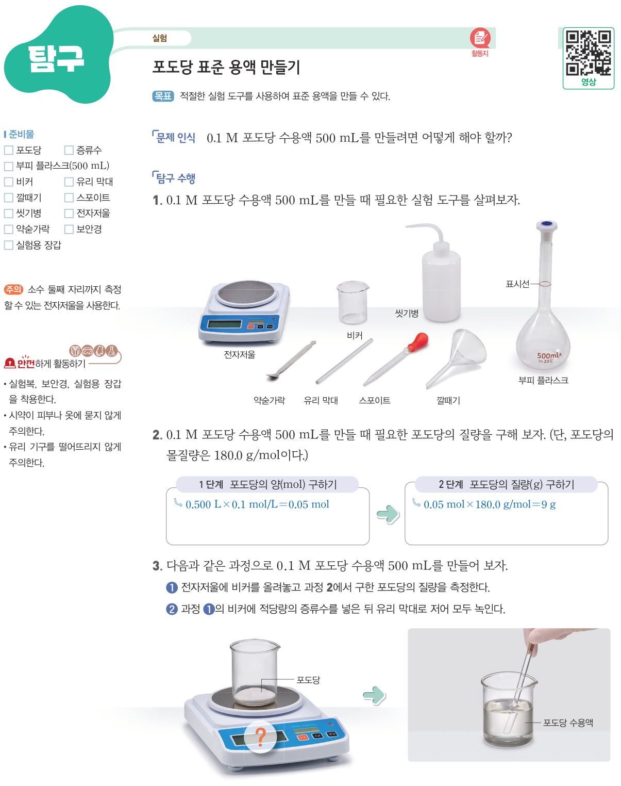
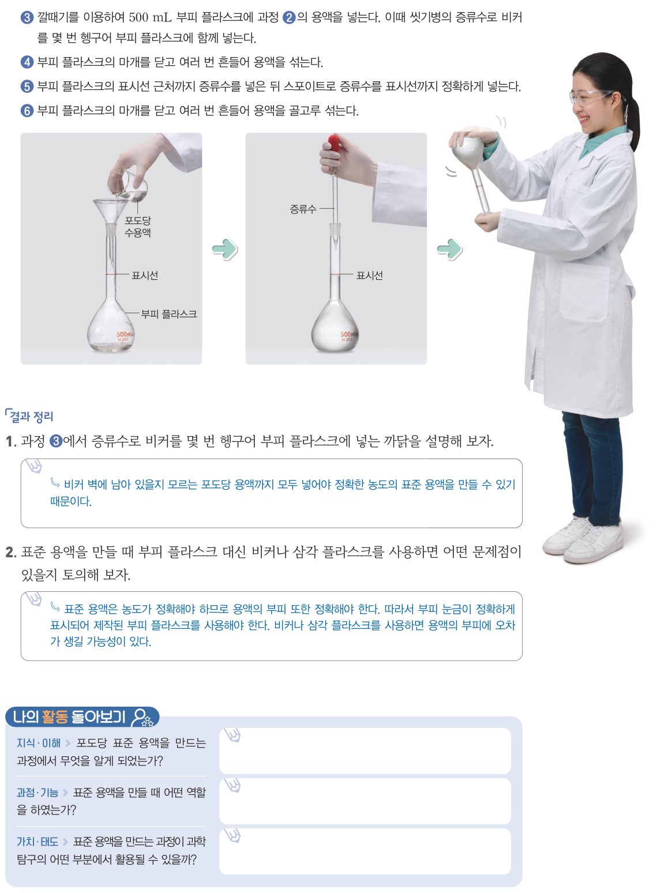
[핵심 이론] 몰 농도(M) = 용질의 몰수 / 용액의 부피(L). 0.1 M × 0.5 L = 0.05 mol = 9.0 g. 용액 부피를 정확히 맞추려면 부피 플라스크를 쓰고, 옮길 때 용기를 헹군 물까지 넣는다. 관찰 평가 항목은 관찰 가능한 구체적 행동으로 진술해야 평가자 간 신뢰도와 타당도가 확보된다.
[교육과정 근거] [12화학04-02] 성취기준(몰 농도의 의미, 원하는 몰 농도의 용액 만들기)과 탐구 활동(적절한 실험 도구를 사용하여 표준 용액 만들기). 평가 방법: 평가 요소에 적합한 평가 상황 설정, 타당한 평가 방법 선정.
[채점 포인트] ㉠·㉡ 모두 ‘작다’와 각각의 원인(용액 부피 증가 / 용질 손실). 수정 방법과 부피 플라스크의 정확성. ㉢은 ‘관찰 불가능·주관적 진술 → 신뢰도 저하’와 행동 진술로 바꾼 항목.
[출제 포인트] 교과서 탐구(포도당 9 g, 500 mL 부피 플라스크, 비커 헹구기, 표시선 맞추기)의 대표 오류(용매 부피 = 용액 부피, 헹굼 누락)와 관찰 평가표의 평가 준거 진술(2017·2018 화학). [12화학04-02] 성취기준·탐구 활동, 평가 방법 원문.
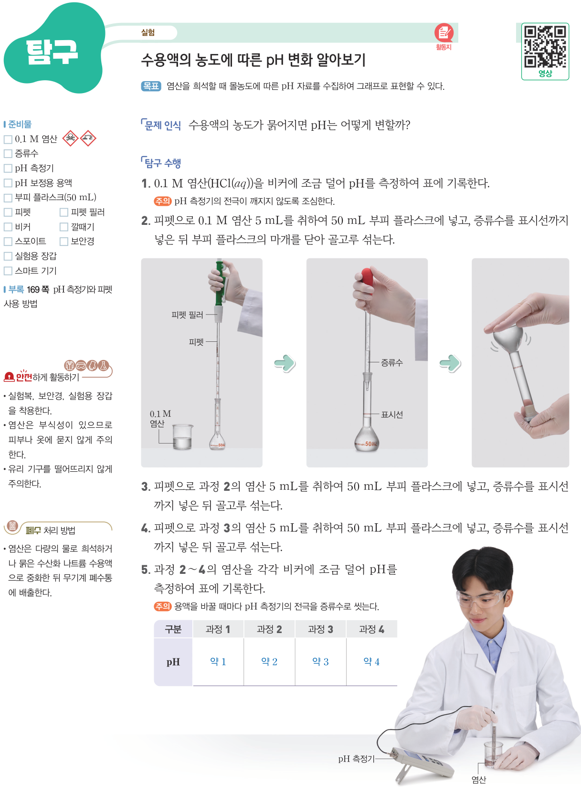
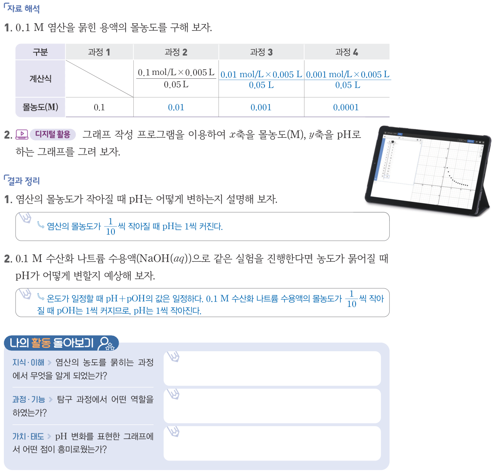
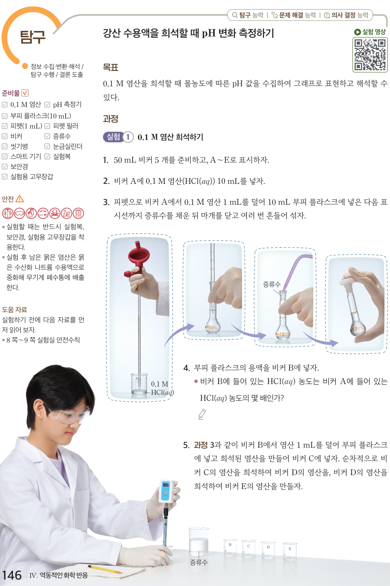
[핵심 이론] 하슈웨 모형: C1(선개념)과 R1(C1으로 설명되는 현상), C2(과학 개념)와 R2(C1으로 설명되지 않고 C2로 설명되는 현상). 갈등 1은 C1–R2 사이, 갈등 2는 C1–C2 사이. pH = −log[H₃O⁺]; 25 ℃에서 Kw = 1.0×10⁻¹⁴이므로 매우 묽은 산의 pH는 7에 가까워질 뿐 7을 넘지 않는다.
[교육과정 근거] [12화학04-01] 성취기준(물의 자동 이온화, 물의 이온화 상수, pH 표현)과 탐구 활동(강산·강염기 희석 시 pH 데이터 수집·그래프 표현·해석). 내용 체계 과정·기능: 디지털 탐구 도구와 수학적 사고를 활용하여 정보 수집·변환·해석.
[채점 포인트] ㉠은 로그 관계(반비례 아님)와 −log 변환 직선. 측정 오차 원인 1가지. C1·R2 진술과 ‘갈등 1’. ㉡은 물의 자동 이온화로 [H₃O⁺] ≥ 1.0×10⁻⁷ M. ㉢ 수학적 사고.
[출제 포인트] 두 출판사 공통 탐구(0.1 M 염산 10배씩 희석, pH 측정, 스프레드시트 그래프)의 자료 변환(로그) 오류와 ‘묽히면 염기성’ 오개념을 하슈웨 모형(2025 화학 A7, 2016 화학)으로 구성. [12화학04-01] 성취기준·탐구 활동 원문, 내용 체계 과정·기능 원문 빈칸(수학적 사고).
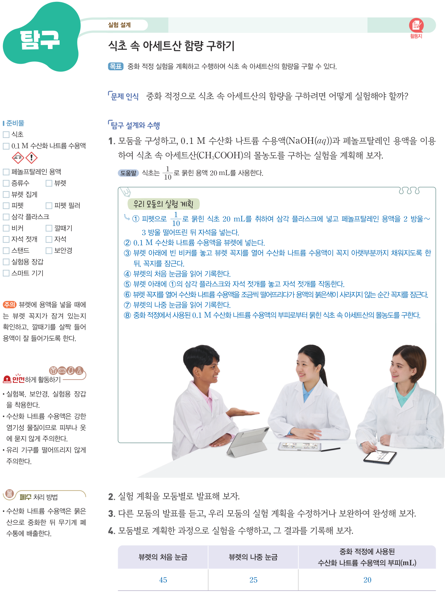
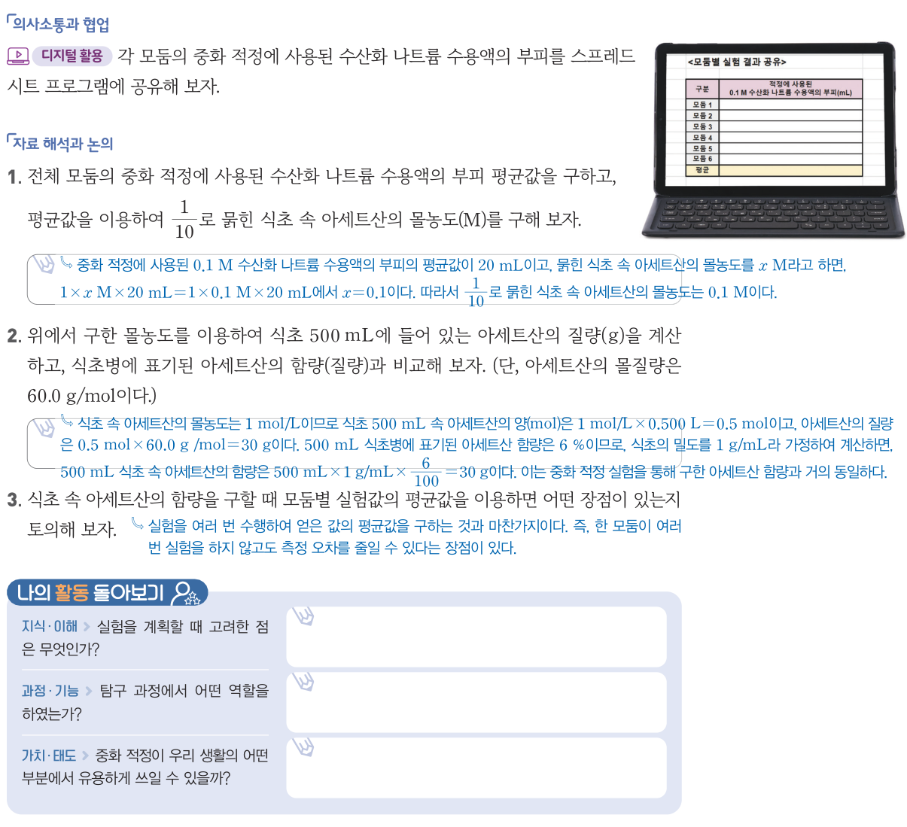
[핵심 이론] 고윈의 V도: 왼쪽 개념적 측면(세계관·철학·이론·원리·개념), 가운데 초점 질문과 사건·대상, 오른쪽 방법적 측면(기록 → 변환 → 지식 주장·가치 주장). 두 측면은 초점 질문을 중심으로 상호 작용한다. 중화 적정: nMV = n′M′V′.
[교육과정 근거] [12화학04-04] 성취기준(중화 적정 실험을 계획·수행하여 미지 시료의 농도 찾기), 탐구 활동(식초 속 아세트산 함량 구하는 실험), 해설(중화 적정 곡선은 다루지 않는다).
[채점 포인트] ㉠ 이론, ㉢ 변환과 두 측면의 상호 작용 설명. ㉡은 ‘뷰렛 눈금은 아래로 커짐 → 나중 눈금이 커야 함’. 묽힌 식초 0.1 M(원래 식초는 1 M). ㉣은 해설 원문 근거.
[출제 포인트] 교과서 탐구(1/10 식초 20 mL, 0.1 M NaOH, 페놀프탈레인, 모둠 평균)를 고윈 V도(2020 화학 B4)로 재구성. 뷰렛 눈금 기록 오류(지도서 예시 오류 재구성), [12화학04-04] 성취기준·탐구 활동·해설 원문(중화 적정 곡선은 다루지 않음).
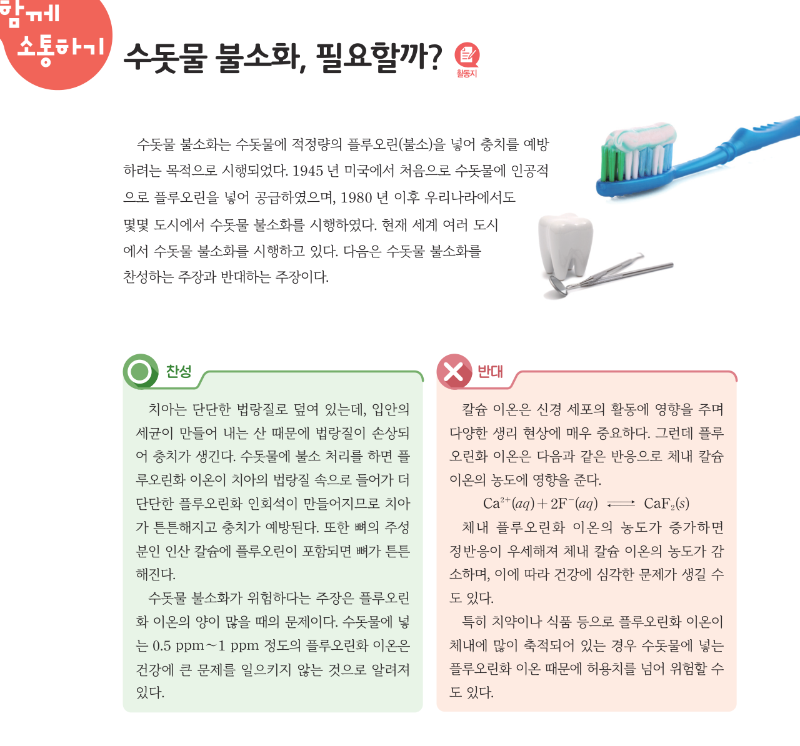
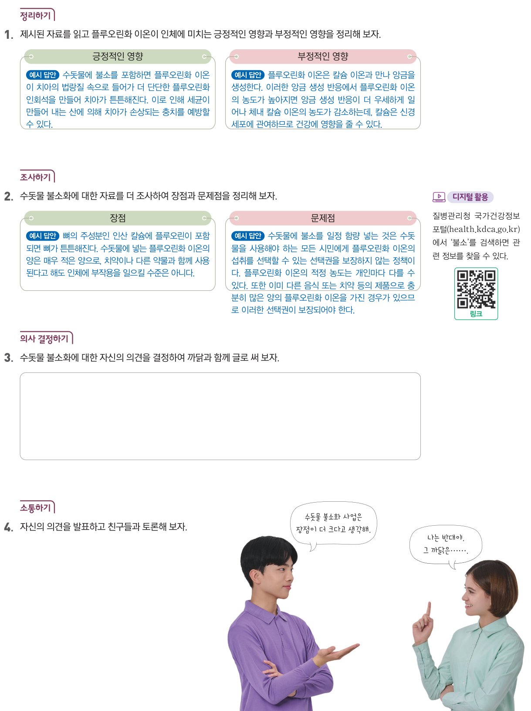
[핵심 이론] 사회 과학적 쟁점(SSI): 과학과 관련되었으나 정답이 하나로 정해지지 않은 비구조화된 사회적 문제로, 과학 지식뿐 아니라 윤리·가치·경제·사회적 영향을 함께 고려하는 의사 결정을 요구한다. 의사 결정 모형: 쟁점 확인 → 대안 탐색 → 판단 기준 설정 → 대안 평가 → 결정 → 결정의 평가.
[교육과정 근거] 교수·학습 방법: 과학 및 과학과 관련된 사회적 쟁점을 주제로 과학 글쓰기와 토론. 내용 체계 과정·기능: 도출된 결론을 바탕으로 해결 방안에 대한 합리적 의사 결정하기.
[채점 포인트] SSI 특징 2가지(비구조화, 가치·윤리 고려). ㉢ 사회적 쟁점, ㉣ 의사 결정. ㉠은 ‘평형 ≠ 완전 소모’와 ‘낮은 농도’. ㉡은 가치·자율성 누락과 ‘판단 기준 설정’ 단계.
[출제 포인트] 교과서 함께 소통하기(수돗물 불소화, Ca²⁺ + 2F⁻ ⇌ CaF₂)를 SSI 의사 결정 수업으로 구성(2024 지구 B4). 평형 과장 오류, 가치 판단 누락, 교수·학습 방법(사회적 쟁점 글쓰기·토론)·내용 체계 과정·기능(합리적 의사 결정) 원문 빈칸.